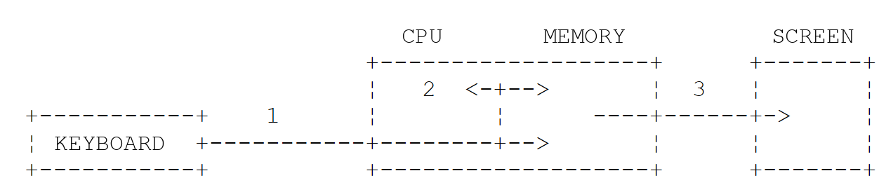
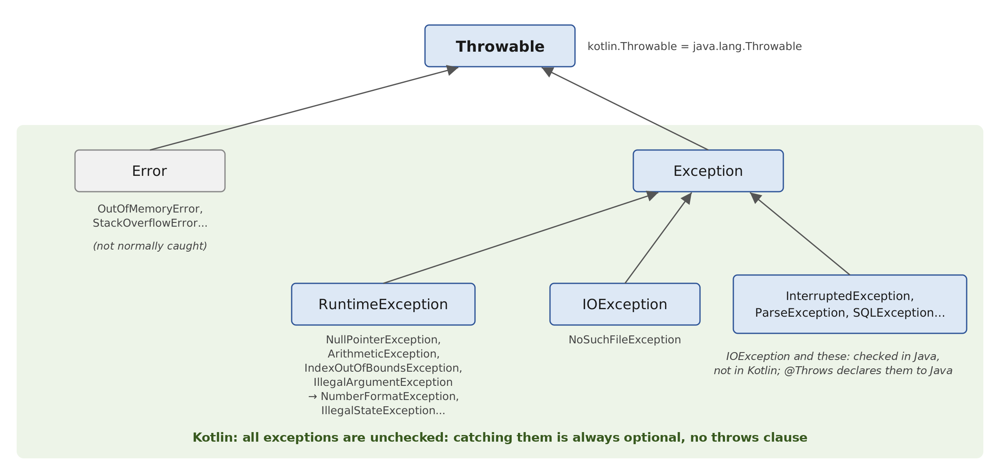

3. Kotlin 语言基础
3.1. 引言
我们先把 Kotlin 当作一门传统的编程语言来看待。类将在下一章介绍。程序由两部分组成：
- 数据；
- 操作数据的指令。
我们通常努力把数据与指令分开：

本章中的所有示例都属于课程代码中 [03-basics] 文件夹里的 Gradle 项目。如第 2 章“搭建开发环境”所述，每个程序都包含在一个文件中，该文件位于以程序名小写形式命名的包中：程序 [Basics04.kt] 位于文件夹 [src/main/kotlin/basics04] 中，并以 [package basics04] 这一行开头。你可以点击 IntelliJ IDEA 中位于 [main] 函数旁边边栏里的绿色三角形来运行它，也可以在命令行中，在项目文件夹下，使用命令 [gradlew -q run -Pmain=basics04.Basics04Kt] （在 Linux 和 macOS 上为 [./gradlew] ）来运行。[-q] （“quiet”）选项会抑制 Gradle 消息：只保留程序的输出。我们将在下一节解释名称 [basics04.Basics04Kt]。这些示例使用法语的语言和格式约定（“区域设置”fr-FR）运行，就像在法语版 Windows 机器上一样。我们将看到，这只影响用特定 格式格式化的数字和日期：把浮点数直接转换为字符串时，始终使用小数点。
3.2. 最小程序
3.2.1. 顶层 main 函数
程序 [Basics01.kt] 如下：
结果：
说明：
- 第 2 行：程序的包。包 把相关的声明组合在一起，就像文件夹把文件组合在一起一样。此文件中声明的所有内容的完整名称都以 [basics01.] 开头。在 Kotlin 中，与 Java 不同，文件所在的目录并不由包名决定；不过，让它们保持一致是常见的做法，我们也遵循这一做法；
- 第 4 行：[main] 函数是程序的 入口点。关键字 [fun] 声明一个函数；[main()] 没有参数，也不返回值。该函数直接写在文件中，位于任何类之外：它是顶层函数。函数体用花括号括起来；
- 第 5 行：[println] 函数在屏幕上打印一行。它同样是顶层函数，声明在 Kotlin 标准库的 [kotlin.io] 包中；
- 第 7 行：同一操作的 Java 版本。[System] 是 JDK 的一个类，[out] 是它的一个字段，表示标准输出（屏幕），而 [println] 是这个对象的方法。Kotlin 直接使用所有 Java 类：这是它的主要优势之一。Kotlin 函数 [println] 实际上只是 [System.out.println] 的简写；我们将使用它；
- 第 9 行：[words] 是一个字符串列表；列表将在第 5 章介绍。关键字 [val] 声明一个值不会改变的变量；我们没有指定它的类型：编译器根据值推断出类型，这里是 [List<String>]。[listOf] 函数属于 [kotlin.collections] 包，使用它无需 import 语句（见下文）；
- 第 10 行：列表显示时，其元素用方括号括起来；
- 语句不以分号结尾：换行就足够了。分号只用于在一行中写多条语句。以 // 开头的行是注释，会被编译器忽略。
带两个命令行参数，它们通过 [--args] 选项传递给 Gradle：
这些参数被忽略，因为 [main()] 函数没有用来接收它们的参数。要使用它们，请把函数声明为 [fun main(args: Array<String>)]：这样，[args] 字符串数组就会包含命令行参数。我们将在“主程序参数”一节中回到这一点。
3.2.2. main 函数及其参数
程序 [Basics02.kt] 如下：
结果：
说明：
- 第 4 行：[main] 函数在 [args] 参数中接收命令行参数。在 Kotlin 中，参数的类型写在 其名称之后，用冒号分隔：[args: Array<String>] 读作 “[args]，类型为字符串数组”。这相当于 Java 中的 [String[] args] ；
- 第 6 行：数组中的元素个数是 [args.size] （相当于 Java 的 [args.length]）。在字符串中，[${args.size\}] 会被替换为花括号中表达式的值：这是一个 字符串模板，我们稍后将更详细地讨论；
- 第 7 行：[contentToString] 函数用数组的元素构造一个字符串。它取代了 Java 方法 [Arrays.toString] ，并且与前一个函数一样，不需要任何导入。
我们没有写任何类。然而，运行程序的 Java 虚拟机（JVM）只认识类。因此，Kotlin 编译器会把文件中的顶层声明组织到它自己生成的一个类中，类名为文件名后面加上 [Kt]：对于包 [basics02] 中的文件 [Basics02.kt]，这个类就是 [basics02.Basics02Kt]。这就是为什么执行命令把该程序写作 [-Pmain=basics02.Basics02Kt]。你可以通过用命令行编译器 [kotlinc] （第 2 章）编译该文件，然后用 JDK 软件包中的 [javap] 工具检查生成的类来验证这一点：
- [kotlinc] 在包目录中生成了一个中间代码文件（“字节码”）[Basics02Kt.class]；
- 命令 [kotlinr] （Kotlin 启动器，第 2 章）通过把 Kotlin 标准库（[kotlin-stdlib.jar]）添加到类路径来执行这个类；
- [javap] 显示生成的类是 [public final] ，并且 [main] 函数在其中变成了 [public static] 方法：恰好是 JVM 所期望的 [public static void main(String[] args)] 方法。对 JVM 而言，Kotlin 程序只是另一个 Java 类；
- 当用简单的 [java] 命令启动时，该类会失败：生成的代码调用了 Kotlin 标准库中的类（这里是 [kotlin.jvm.internal.Intrinsics]，它除其他事项外还检查参数不等于 [null]），而类路径中缺少它。Gradle 和 IntelliJ IDEA 会自动添加它；独立的 Kotlin 程序必须包含它（选项 [-include-runtime] ，用于 [kotlinc]，第 2 章，或 Gradle 脚本，见下文）。
对于程序 [Basics01.kt]，其 [main] 函数没有参数，编译器还会生成一个 [main(String[])] 方法，它只是调用第一个方法。Gradle 把它编译的类放在项目的 [build/classes/kotlin/main] 文件夹中；编译之后你可以在那里检查它们（[gradlew build]）：
与 Java 25 对比很有启发。Java 25 也允许你不声明类就编写程序（“紧凑源文件”，带有名为 [void main()] 的方法）：Java 编译器随后把文件内容包装在一个以文件名命名的 隐式类中。Kotlin 自第一个版本起就这样做了，有两点不同：
- 生成的类名为 [Basics02Kt] 而不是 [Basics02]，这使名称 [Basics02] 可以留给程序员可能想在同一文件中自己编写的类。放在文件顶部的注解
***[@file:JvmName("ClassName")]*** 允许你选择不同的名称； - 顶层函数被编译为 [static] 方法：调用 [main] 时不会创建任何对象，而紧凑 Java 文件中的 [void main()] 方法是实例方法。最重要的是，在 Kotlin 中，这种语法并不局限于小程序：顶层函数、变量和常量在所有程序中都被普遍使用，与类并存。
[main] 函数只能采用我们已经见过的两种形式：[fun main()] 和 [fun main(args: Array<String>)]。它不需要声明为 public：在 Kotlin 中，一切默认都是公开的。
3.2.3. 默认导入
程序 [Basics01.kt] 使用了 [println] 和 [listOf] 函数，程序 [Basics02.kt] 使用了 [contentToString] 函数，而它们都没有任何 [import] 指令。这之所以可行，是因为每个 Kotlin 文件都会自动导入标准库中的下列包：
由此提供了基本类型（[Int]、[String]……来自 [kotlin] 包）、列表、集合和字典（[kotlin.collections]）、控制台输入输出（[kotlin.io]）、区间（[kotlin.ranges]）、字符串函数（[kotlin.text]），以及 Java 包 [java.lang] 中的类（[System]、[Math]、[Thread]……）。其他任何声明都必须在文件顶部、紧跟在 [package] 行之后导入：每个类或函数一条指令（[import java.math.BigDecimal]），或每个包一条指令（[import java.time.*]）。没有与 Java 25 的 [import module java.base;] 指令等价的东西，而紧凑的 Java 文件会自动获得该指令：使用 JDK 的 [BigDecimal] 或 [LocalDate] 类的 Kotlin 程序必须导入它们。关于语法的一点说明：[import] 指令与其他语句一样，不以分号结尾。
3.3. Kotlin 数据类型
Kotlin 使用以下数据类型：
- 整数，包括有符号和无符号的；
- 实数；
- 十进制数；
- 字符和字符串；
- 布尔值；
- 对象。
3.3.1. 预定义数据类型
Kotlin 类型 | 对应的 Java 类型 | 表示的数据 | 字面量后缀 | 编码 | 取值范围 |
[Char] | [char] / [Character] | 字符 | 2 字节 | Unicode 字符（UTF-16），从 '\u0000' 到 '\uFFFF' | |
[Byte] | [byte] / [Byte] | 整数 | 1 字节 | [-2⁷, 2⁷-1] 或 [-128, 127] | |
[Short] | [short] / [Short] | 整数 | 2 字节 | [-2¹⁵, 2¹⁵-1] 或 [-32768, 32767] | |
[Int] | [int] / [Integer] | 整数 | 4 字节 | [-2³¹, 2³¹-1] 或 [-2147483648, 2147483647] | |
[Long] | [long] / [Long] | 整数 | L | 8 字节 | [-2⁶³, 2⁶³-1] 或 [-9223372036854775808, 9223372036854775807] |
[UByte], [UShort], [UInt], [ULong] | （无对应类型） | 无符号整数 | U, UL | 1、2、4、8 字节 | [0, 2⁸-1], [0, 2¹⁶-1], [0, 2³²-1], [0, 2⁶⁴-1] |
[Float] | [float] / [Float] | 实数 | F | 4 字节 | 绝对值为 [1.4 10⁻⁴⁵, 3.4 10³⁸]，7 位有效数字 |
[Double] | [double] / [Double] | 实数 | 8 字节 | 绝对值为 [4.9 10⁻³²⁴, 1.8 10³⁰⁸]，15 到 16 位有效数字 | |
[Boolean] | [boolean] / [Boolean] | 布尔值 | 未定义 | [true], [false] | |
[String] | [String] | 字符串 | 对 Unicode 字符序列的引用 | ||
[BigDecimal] （Java 类） | [BigDecimal] | 十进制数 | 可变 | 精确的十进制数，精度任意 | |
[Any] | [Object] | 对象引用 | 对任意类型对象的引用 |
Java 区分八种 基本类型 （[int]、[double]……），其值不是对象，以及 引用类型 （类），并且为每种基本类型关联一个 包装类（[Integer] 对应 [int]……）。Kotlin 取消了这种区分：在 Kotlin 中，每个值都是对象。[Int] 类型是一个带有方法的类；你可以写 [3.plus(4)] 或 [3.toString()]，而 Java 不允许对 [int] 类型的字面量 3 这样做。所有类型名称都以大写字母开头，与类名一样。
这对运行时性能没有影响。只要可能，编译器就会把 [Int] 类型的变量转换为 JVM 的基本类型 [int] 的变量，只有在需要对象时才使用包装类 *[java.lang.Integer] ：即值被传递给 [Any] 类型的参数（相当于 Java 的 [Object] 类）、存储在列表中，或者它可以是 [null] 时（见下文）。因此装箱和拆箱仍然存在，但由编译器处理，Kotlin 程序员无需为此操心。Kotlin 中没有 [Integer] 类型：只有 [Int]*。
以字节为单位的大小由常量 [Int.SIZE_BYTES]、[Long.SIZE_BYTES]……给出（以位为单位则是 [Int.SIZE_BITS]……），范围的边界由 [Int.MIN_VALUE] 和 [Int.MAX_VALUE] 等给出。
与 Java 不同，Kotlin 有 无符号整数：[UByte]、[UShort]、[UInt]和 [ULong]，它们与对应的有符号类型大小相同，但只表示正数或零。它们的字面量以 U（[42U]）或 UL（[42UL]）为后缀。它们主要用于处理二进制数据（文件字节、地址、颜色）；常见的 计算使用有符号类型进行。Kotlin 也没有十进制类型：金额使用 Java 包 [BigDecimal] 类来计算，该类位于 [java.math]，我们稍后会讨论。
程序 [Basics03.kt] 说明了这几点：
结果：
说明：
- 第 4 行：[BigDecimal] 类是 JDK 的子类；必须导入它；
- 第 7 行：声明一个 [integer] 变量，类型为 [Int] ，初始化为 2。在 Kotlin 中，变量的类型写在其名称之后，用冒号分隔。我们将看到，类型通常可以省略；
- 第 8 行：后缀 F 是必需的：字面量 10.5 的类型是 [Double]，编译器拒绝把它赋给 [Float] 类型的变量；
- 第 11 行：字面量 1000 可以赋给 [Long] 类型的变量，因为编译器知道它是一个落在该类型范围内的常量。第 12–13 行对 [Byte] 和 [Short] 类型同样适用。然而，正如我们将看到的，Kotlin 从不在数值类型之间隐式转换 变量 ；
- 第 16 行：[BigDecimal] 数是一个对象；这里它由字符串创建，这保证了值是精确的。Kotlin 没有 [new] 运算符：通过把类的构造函数当作函数来调用来创建对象；
- 第 18 行：在字符串中，[$integer] 会被替换为变量 [integer] 的值，而 [${typeName(integer)\}] 会被替换为写在花括号之间的表达式的值。这些 字符串模板 是在 Kotlin 中构造字符串的标准方式；我们将在下一节回到这一点。[Int.SIZE_BYTES] 是 [Int] 的字节大小；
- 第 18 行：[typeName] 函数（第 42–43 行）期望一个 [Any] 类型的参数。因此该参数是一个对象，值 [integer] 被包装在一个 [java.lang.Integer] 对象中。该函数显示两个名称：[o::class.qualifiedName] 是 Kotlin 的完整类型名称（[kotlin.Int]），而 [o.javaClass.name] 是 JVM 中对象所属类的名称（[java.lang.Integer]）。我们可以看到，[kotlin.Int]、[kotlin.Double]、[kotlin.String]……在运行时由 Java 类表示；
- 第 21 行：字符串在内存中的大小无法访问：[String] 没有常量 [SIZE_BYTES]；
- 第 26 行：布尔值的大小不是由 JVM 定义的：[Boolean] 没有常量 [SIZE_BYTES]；
- 第 27 行：[BigDecimal] 是 Java 类：它的两个名称相同；
- 第 29 行：字面量 3 是 [Int] 类型的对象：[3::class.simpleName] 是其类型的短名称，并且可以调用它的方法 [plus] 和 [toString]。我们将在第 4 章看到，+ 运算符只是书写方法 [plus] 的另一种方式；
- 第 31–33 行：常量 [MIN_VALUE] 和 [MAX_VALUE] 指定值域的边界。注意：对于实数，[Double.MIN_VALUE] 是最小的 严格正 值（4.9 × 10⁻³²⁴），而不是最大的负数，后者是 [-Double.MAX_VALUE]；
- 第 35 行：32 位无符号整数。值 4,000,000,000 超出了 [Int] 的范围，但没有超出 [UInt] 的范围，后者最大可达 2³²-1；
- 第 37–38 行：-1 被编码为 32 个置 1 的位；[toUInt] 函数把它们解释为无符号整数，其值等于 2³²-1；
- 第 42–43 行：文件中的顶层函数。返回类型写在参数列表之后：[: String]。它返回（[return]）一个字符串。函数将在“向函数传递参数”一节中介绍。
请注意，尽管程序在法语环境下运行，实数仍以小数点显示（10.5、-4.6）。把数字转换为字符串——无论使用模板、拼接，还是 [toString] 方法——都不依赖于用户的语言：它始终产生小数点。只有 %f 这类数字格式（我们稍后讨论）才遵循语言的约定。
3.3.2. 字面量数据的写法
数据 | 字面量示例 |
[Int] 整数（32 位） | 145, -7, 0xFF（十六进制）, 0b1010_1010（二进制） |
整数 [Long] （64 位），后缀 L | 100000L, 1_000_000_000_000L, 3_000_000_000（对 [Int] 来说太大） |
无符号整数 [UInt]、[ULong]，后缀 U、UL | 255U, 0xFFFF_FFFFU, 1UL |
实数 [Double] | 134.789, -45E-18 (-45 × 10⁻¹⁸), 10.0 |
实数 [Float]，后缀 F 或 f | 134.789F, -45E-18F |
十进制数 [BigDecimal] | 无字面量：[BigDecimal("100000.50")] |
字符 [Char] | 'A', 'b', '\n', '\u00e9' |
字符串 [String] | "today", "c:\\chap1", "$name is ${age + 10\} years old", raw string """c:\chap1""" |
布尔值 [Boolean] | [true], [false] |
日期 | [LocalDate.of(1954, 10, 13)] （年、月、日），表示 1954 年 10 月 13 日 |
在源代码中，浮点数总是带小数点书写。与 Java 一样，整数可以用十六进制（前缀 [0x]）或二进制（前缀 [0b]）书写，并且可以用 _ 字符分隔数字组以提高可读性：[1_000_000] 是整数一百万。Kotlin 与 Java 有几处不同，消除了同样数量的陷阱：
- 不带后缀的整数字面量，如果能放进 [Int] 类型，就是该类型，否则是 [Long] 类型：[3_000_000_000] 是 [Long]。Java 会拒绝没有后缀 L 的这个字面量；
- 后缀 L 必须大写：编译器会拒绝 [100l] 并给出消息 [use 'L' instead of 'l']，因为 l 太像数字 1；
- 没有八进制表示法。Java 中 017 等于 15 的陷阱在这里不存在：编译器会拒绝 017 并给出消息 [leading zeros are not allowed in integer literals]；
- 浮点数没有“D”后缀：包含小数点或指数的字面量就是 [Double]；因此 10.0 写作 10.0，而不是 10D；
- 无符号整数有自己的后缀 U 和 UL。
字符串字面量可以包含以 \ 字符引入的 转义序列 ："\n" 表示行结束字符，而不是 \ 和 n 这两个字符的序列，"\t" 表示制表符，"\"" 表示双引号，"\\" 表示 \ 字符本身，"\$" 表示 $ 字符（见下文），"\u00e9" 表示十六进制代码为 00E9 的 Unicode 字符。因此，要写 Windows 路径 c:\chap1\paragraph3，必须写成 "c:\\chap1\\paragraph3"。Java 的文件类在 Windows 上也接受 / 分隔符："c:/chap1/paragraph3" 指的是同一个文件。
要由多个值构造字符串，Kotlin 提供三种方法：
- 字符串模板：在字符串中，[$name] 会被替换为变量 [name] 的值，而 [${expression\}] 会被替换为任意表达式的值：["in 10 years he will be ${age + 10\}"]。这是最易读、使用最广泛的方法。它相当于 C# 的插值字符串，例如 [$"..."]；而 Java 没有这一特性（Java 21 和 22 中作为预览提出的“字符串模板”已被移除）；
- 使用 + 运算符进行 拼接：如果左操作数是字符串，右操作数就会被转换为字符串，不论其类型如何。与 Java 不同，左操作数必须是字符串：[10 + " years"] 会被编译器拒绝，因为 [Int] 类型没有接受字符串的 + 运算符；
- 格式：["format".format(value1, value2, ...)] 或 [String.format(format, value1, value2, ...)]。这些是 Java 的格式，具有相同的 说明符，按顺序由后面的值替换：%s（任意值转换为字符串）、%d（整数）、%f（浮点数）、%.2f（保留两位小数的浮点数）、%x 或 %X（十六进制整数）、%,d（带千位分隔符的整数）、%e（科学记数法）、%n（换行）、%10s（右对齐到 10 个字符的字符串）、%-10s（左对齐）……数字格式遵循用户语言的约定。当需要控制数字的呈现方式（小数位数、对齐）时使用它们；否则，使用模板就够了。
最后，Kotlin 提供“原始字符串”：用三个引号界定的字符串，例如 ["""..."""]，可以跨越多行并包含引号；最重要的是，转义序列在原始字符串中 不会 被解释：\ 字符按原样处理，因此应写成 ["""c:\chap1"""]。这对于编写 JSON、SQL、HTML 或正则表达式（第 5 章）非常有用。原始字符串支持模板。前导空格按原样保留；要让文本与代码一起缩进，请对字符串应用 [trimIndent()] 函数，它会删除所有行共有的空格，以及为空的第一行和最后一行；或者应用 [trimMargin()] 函数，它会删除 | 字符（“边距”）之前的所有内容。Java 15 的文本块就是以此为模型设计的；它们会自动删除公共缩进，但会解释转义序列。
程序 [Basics04.kt] 演示了这些不同的写法：
结果：
说明：
- 第 4–6 行：导入程序使用的 JDK 类；
- 第 10 行：一行上有四个声明，用分号分隔。[0xFF] 是 255，[0b1010_1010] 是 170。变量类型没有指定：编译器根据值推断它们，这里是 [Int]；
- 第 11 行：后缀 L 把 100000 变成 [Long]。字面量 3_000_000_000 对 [Int] 来说太大，它无需后缀就是 [Long] ；
- 第 14 行：两个 [UInt] 类型的无符号整数。0xFFFF_FFFFU 的 32 位全部置 1，等于 2³²-1；
- 第 17 行：-45E-18 显示为 -4.5E-17：这是同一个值，经过了规范化。浮点数 10.0 显示为 10.0：把 [Double] 转换为字符串时，始终至少产生一位小数；
- 第 19 行：[BigDecimal] 保留书写时的小数位数：100000.50，而不是 100000.5；
- 第 22 行：序列 \u00e9 表示十六进制代码为 00E9 的 Unicode 字符，即 é；
- 第 26 行：日期。[LocalDate] 类（JDK 的 [java.time] 包）表示不含时间的日期。Kotlin 没有自己的日期类：它使用 Java 的。其到字符串的转换使用国际格式 ISO 8601（年-月-日），与语言无关。我们将在第 5 章介绍日期；
- 第 30 行：每个 \\ 表示单个 \ 字符；
- 第 32 行：一个换行符和一个制表符；
- 第 34 行：序列 \$ 和 \"；
- 第 39 行：模板。[$name] 和 [$age] 被替换为变量的值，而 [${age + 10\}] 被替换为表达式的值。只要 $ 后面不是简单的变量名，就必须使用花括号；
- 第 40 行：通过拼接构造的同一文本。[(age + 10)] 周围的括号至关重要：没有它们，+ 运算符会从左到右求值，字符串会先接收 23，再接收 10，结果就是“in 10 years he will be 2310”。模板没有这个陷阱；
- 第 41 行：使用格式构造的同一文本；
- 第 43 行：几个格式说明符：%.1f（一位小数）、%X（大写十六进制）、%,d（千位分隔符）。这些格式遵循法语的约定：小数逗号，以及作为 千位分隔符的细不换行空格。Kotlin 库的 [format] 函数应用于格式字符串本身；它调用 Java 函数 [String.format]；
- 第 44 行：[toString(base)] 函数把整数转换为任意进制的字符串，这里是 2 进制；[uppercase()] 函数把字符串转换为大写。请注意，模板可以包含函数调用；
- 第 45 行：自定义日期格式：星期几（EEEE）、日（d）、用文字表示的月份（MMMM）、年（yyyy）。星期和月份的名称是法语的，即用户的语言。请注意，模板可以在花括号内包含引号；
- 第 48–53 行：跨越多行的原始字符串。引号按原样书写，\chap1 不需要写成 \\chap1。[trimIndent()] 函数删除了所有行共有的八个空格，以及第一行（它是空的，紧跟在开头引号之后）和最后一行（在结尾引号之前只包含空格）；
- 第 56 行：单行原始字符串，这样就无需对 JSON 中的引号进行转义，其中有两个模板；
- 第 59–62 行：[trimMargin()] 函数从每一行中删除标记边距的空格和 | 字符：放在 | 之后的三个空格被保留。由于转义序列在原始字符串中不会被解释，$ 字符写作 [${'$'\}]：一个表达式为 '$' 字符的模板。这里，由于 $ 后面是换行符，它本来可以单独写；但是，[$name] 会被替换为 [name] 的值。自 Kotlin 2.2 起，你也可以在字符串前加上多个 $ 符号：在 [$$"""{ "$schema": "$$name" \}"""] 中，需要两个 $ 符号来引入模板，而 [$schema] 保持不变。
3.3.3. 数据声明
3.3.3.1. 声明的作用
程序处理由名称和类型刻画的数据。这些数据存储在内存中。程序编译时，编译器会为每个数据分配一个由地址和大小刻画的内存位置。它根据程序员所做的声明来完成这件事。此外，这些声明使编译器能够检测编程错误。因此，操作 [x = x * 2] 在 [x] 是字符串时将被判定为无效。
3.3.3.2. 只读变量与可变变量
Kotlin 有两个用于声明变量的关键字：
- [val] （“value”）声明一个 只读 变量：它只被赋值一次，之后不能更改。这相当于 Java 的 [final] 变量；
- [var] （“variable”）声明一个 可变 变量，可以被赋予新值。
语法如下：
类型通常省略：编译器随后根据值推断它（类型推断）。因此 Kotlin 关键字 [var] 与 Java 10 中的含义不同：在 Java 中，[var] 表示“推断类型”；在 Kotlin 中，它表示“可变”，而类型既可以用 [val] 推断，也可以像用 [var] 一样推断。声明时没有初始化的变量必须有显式类型；在被赋值之前不能使用它（消息 [variable 'b' must be initialized]）。
Kotlin 的惯例是用 所有 变量都使用 [val] 声明，只有当变量的值确实预期会改变时才使用 [var]。这提高了程序的可读性：当你读到 ***[val total = ...]*** 时，就知道 *[total] 会保持该值。IntelliJ IDEA 还能帮助识别任何名为 [var] 而实际上可能是 [val]* 的变量。
Kotlin 区分大写和小写字母：变量 [END] and [end] 是不同的。按惯例，变量名以小写字母开头，之后每个单词以大写字母开头：[priceExclTax], [nbChildren]。
3.3.3.3. 声明常量
像 [val] 这样的变量不会改变其值，但其值可能直到运行时才知道（[val today = LocalDateTime.now()]）。严格地说，常量是在编译时已知的值。Kotlin 使用关键字 [const val] 来声明它：
[const val] 常量声明在文件的顶层（函数之外），或者声明在 [object] 或 [companion object] 中，我们将在第 4 章介绍。它只能是基本类型（[Int]、[Double]、[Boolean]……）或 [String] 类型，并且其值必须能由编译器计算出来。例如：
编译器随后会把 [VAT_RATE] 的每一处出现替换为其值，就像 Java 编译器对用常量初始化的 [static final] 字段所做的那样。下面的尝试会被拒绝：
（[LocalDate!] 中的感叹号将在下一节解释）。为什么要声明常量？
- 如果给常量起一个有意义的名称，程序更容易阅读；
- 如果需要更改“常量”，程序更容易修改。因此，如果增值税税率变为 0.25，只需修改定义其值的语句：[const val VAT_RATE = 0.25]。如果程序中显式使用了 0.2，就需要修改许多语句。
按惯例，与 Java 一样，常量的名称用大写字母书写，单词之间用 _ 字符分隔：[VAT_RATE]、[MAX_VALUE]。局部变量，例如 [val]，仍使用常规名称。
程序 [Basics05.kt] 如下：
结果：
说明：
- 第 7 行：顶层常量。编译器把它作为 [Basics05Kt] 类中的 [public static final double] 字段；
- 第 11 行：只读局部变量，类型为 [String] （推断得出）；
- 第 13 行：可变变量。字面量 100.0 使 [priceExclTax] 的类型为 [Double]。如果写成 [var priceExclTax = 100]，变量的类型就会是 [Int]，第 15 行对 250.0 的赋值就会被拒绝；
- 第 14 行：结果是 [Double]，至少显示一位小数：120.0；
- 第 15 行：[priceExclTax] 被赋予新值；
- 第 19 行：显式指定类型的数据值；
- 第 20 行：[typeName] 函数（第 41 行）显示其参数类型的短名称（[simpleName]）和完整名称（[qualifiedName]）；
- 第 22 行：隐式指定类型的值。因为 3 的类型是 [Int]，所以 [j] 的类型将是 [Int]；
- 第 24 行：因为 [LocalDateTime.now()] （当前日期和时间）的类型是 [LocalDateTime]，所以 [today] 的类型将是 [LocalDateTime]。请注意，程序像在 Java 中一样调用了 Java 类的 [static] 方法：[LocalDateTime.now()]；
- 第 26–29 行：推断出的类型取决于字面量的写法：3.5 是 [Double]，3.5F 是 [Float]，10L 是 [Long]；
- 第 33 行：声明时没有初始值的变量；它的类型是必需的。虽然它被声明为 [val]，但可以在之后（第 36 行）赋值，不过只能赋一次。Kotlin 不允许在一条语句中声明多个变量，而 Java 的 [int a = 1, b, c = 3;] 则可以：你需要每行写一个声明，或者用分号分隔多个声明，就像上一个程序那样；
- 第 41 行：函数体只有一个表达式时，可以用等号（=）代替花括号和 表达式体来书写。你甚至可以省略返回类型，编译器会根据表达式推断出它。
[val] 变量不能被赋予新值，[var] 变量也不能改变其类型：其类型由声明确定。因此，下面的语句会被编译器拒绝：
3.3.4. 空安全
有时能够表达值的 缺失 是有用的：未知的年龄、数据库中的空字段，或者未成功的搜索。在 Java 中，任何引用类型的变量都可以取值 [null]，它表示“没有对象”。尝试访问这种变量的成员——例如它的 [length()] 方法——会导致运行时错误，即 [NullPointerException]：这是 Java 中最常见的错误，因为 Java 编译器不区分可以为 [null] 的引用和不可以为 null 的引用。为了在没有 [null] 的情况下表达值的缺失，Java 8 添加了 [Optional<T>] 类，这是一个要么包含值要么为空的“盒子”；而对于数字，Java 使用可以持有 [Integer] 的包装类 [null]，而不是基本类型 [int]。
Kotlin 在类型系统本身中解决了这个问题，这是它的一大贡献。常规类型不允许 null 值：[String] 类型的变量总是包含一个字符串，[Int] 类型的变量总是包含一个整数。要允许 [null]，必须在类型名称后面加上问号来明确表示：[String?] 是“字符串或 null”类型，[Int?] 是 “整数或 null”类型。这些被称为“可空类型”。于是，编译器会验证，在没有先处理 [null] 情况的前提下，不能使用可空值的成员：
Kotlin 提供了几种使用可空值的方式：
- [if (x != null)] 测试：在测试为真的分支中，编译器知道 [x] 不等于 [null]，并把它当作 [String] 类型的值（而不是 [String?]）。这被 称为“智能转换”；
- 安全调用 [x?.length]：如果 [x] 等于 [null]，表达式的值为 [null] 而不会导致错误；否则，其值为 [x.length]。因此结果的类型是 [Int?]；
- Elvis 运算符 [x ?: defaultValue]：它的值为 [x] ，当 [x] 不等于 [null] 时；否则为 [defaultValue] （其名称来自“?”符号与这位歌手侧面发型的相似之处）。它经常与安全调用结合使用：[x?.length ?: 0]；
**let**函数：***[x?.let { ... \\}]仅当*[x]不等于*[null]*时才执行花括号之间的代码块；在代码块内，该值被称为 [it] ，其类型是非可空类型。该代码块是一个 lambda**，我们将在第 7 章学习这个概念；- 断言 [x!!]：程序员断言 [x] 不等于 [null]。如果这是真的，[x!!] 的类型就是 [String]；否则，会抛出 [NullPointerException] 。应尽可能少用它：这是有意回到 Java 的行为。
?、?: 和 !! 运算符将在“空运算符”一节中更详细地讨论。C# 采用了类似的方法，即“可空引用类型”（C# 8），形式为警告；在 Kotlin 中，这些是编译错误。
实际上，[NullPointerException] 错误在 Kotlin 中很少见。现在它只会在少数情况下出现：使用 !!、显式抛出的异常，以及最主要的，使用 Java 代码。Kotlin 编译器不知道 Java 方法是否可能返回 [null]：因此它为其分配一个“平台类型”，在编译器消息中表示为 [String!] （不能在代码中书写），它可以作为 [String] 或 [String?] 使用。责任于是落在程序员身上。当已知某个 Java 方法会返回 [null] 时，把它的结果存储在可空变量中（[val path: String? = System.getenv("X")]）：编译器随后会恢复其检查。（带有 [@Nullable] 或 [@NonNull] 注解的 Java 方法——例如使用 JSpecify 项目的注解——会被分配特定的 Kotlin 类型，而不是平台类型。）
包装类和 [Optional] 会怎么样？[Int] 被编译为 [int]，而 [Int?] 被编译为 [java.lang.Integer]，因为只有引用才可以是 [null]：包装类仍然存在，但由编译器自行处理。[Optional] 类仍然可用，因为它是 Java 类，但在 Kotlin 中用处不大：[String?] 与 [Optional<String>] 表达的意思相同，却不会创建额外的对象，而且 ?. 和 ?: 运算符取代了它的 [map] 和 [orElse] 方法。Kotlin 库中可能什么也不返回的函数会返回 [null]：[toIntOrNull()]、[firstOrNull()]、[readlnOrNull()]……
从最初的示例起，我们就会遇到可空类型，因为读取键盘输入的一行的 [readlnOrNull()] 函数，在没有更多内容可读（输入流结束）时会返回 [null] 。程序 [Basics06.kt] 如下：
通过键盘输入文本时的结果：
用户按下 Ctrl-D（在 Windows 上为 Ctrl-Z 后跟 Enter）关闭输入流时的结果：
说明：
- 第 5 行：返回名字的函数，名字也可能是 [null]。其结果的类型 [String?] 会告知使用者这一点。表达式 [if (...) "jean" else null] 是一个返回值的 [if]；我们稍后会回到这一点；
- 第 9–10 行：两个 [String?] 类型的变量。[firstName2] 等于 [null]。类型本来可以省略：它会根据 [firstNameOf] 结果的类型推断出来；
- 第 11 行：模板对于 null 值显示 [null] ；使用 == 运算符测试 [null] 值；
- 第 13–14 行：在 [if] 块内，[firstName1] 的类型是 [String]：可以安全地使用它的 [length] 属性（字符串的长度）。在块外，[firstName1.length] 会被拒绝；
- 第 17 行：安全调用。[firstName2?.length] 等于 [null]；
- 第 19 行：Elvis 运算符。[firstName2 ?: "unknown"] 是 "unknown"，而 [firstName2?.length ?: 0] 是 0；
- 第 21–22 行：[let] 函数。第一个代码块在 [it] 被设为 "jean" 的情况下执行；第二个不执行；
- 第 25–26 行：[toIntOrNull()] 函数把字符串转换为整数，如果字符串不表示整数，则返回 [null] 。[Int?] 类型被编译为 [java.lang.Integer]；
- 第 27 行：不能对 [Int?] 进行计算；[unknownAge + 1] 会被拒绝。Elvis 运算符返回 [Int]：如果 [unknownAge] 等于 [null]，则为 0。因此，对 null 的 [Integer] 拆箱——Java 中的经典陷阱——是不可能发生的；
- 第 30 行：!! 断言应用于非 null 值：它返回该值，类型为 [String]；
- 第 31–34 行：
!!断言应用于*[null]会抛出*[NullPointerException]。捕获该错误的[try / catch]*结构将在后面介绍；这里显示异常的完整类名。[NullPointerException]* 是 Java 类，Kotlin 以相同的名称引用它； - 第 38 行：Java 方法 [System.getenv] 返回系统环境变量的值，如果它不存在则返回 [null] 。其结果是平台类型 [String!]：因此 [path] 属于这种类型；
- 第 39 行：当作 [String?] 使用时，[path] 表现正确；
- 第 42 行：当作 [String] 使用时，编译器接受它，但在运行时会引发 [NullPointerException] 。由 JVM 生成的异常消息（属性 [message]）会准确指出哪个表达式是 [null]。如果我们写的是 [val path: String? = System.getenv(...)]，编译器就会拒绝这一行；
- 第 48 行：[print] 函数写到屏幕上，但不换行；用户输入将紧跟在消息之后；
- 第 49 行：[readlnOrNull()] 函数读取键盘上输入的一行。它返回 [String?] 类型的值：如果输入流已关闭，则为 [null] ；
- 第 50 行：检查 [null] 值；
- 第 54 行：在 [else] 分支中，[line] 的类型是 [String]：可以安全地使用 [line.length]。
3.3.5. 数字与字符串之间的转换
转换 | 函数 |
数字 -> 字符串 | [number.toString()]、类似 ["$number"] 的模板、["" + number]，或类似 ["%d".format(number)] 的格式 |
字符串 -> int | [string.toInt()], [string.toIntOrNull()] |
字符串 -> Long | [string.toLong()], [string.toLongOrNull()] |
字符串 -> Double | [string.toDouble()], [string.toDoubleOrNull()] |
字符串 -> Float | [string.toFloat()], [string.toFloatOrNull()] |
字符串 -> BigDecimal | [string.toBigDecimal()], [string.toBigDecimalOrNull()] |
字符串 -> Boolean | [string.toBoolean()], [string.toBooleanStrictOrNull()] |
这些转换函数属于 Kotlin 库（包 [kotlin.text]），直接在字符串本身上调用：["10".toInt()] ，而不是 Java 函数 [Integer.parseInt("10")]，后者仍然可用。它们是 扩展函数：写在 [String] 类之外，但调用方式与它的方法完全一样。我们将在第 4 章学习如何编写它们。
如果字符串不表示有效的数字，把字符串转换为数字可能失败。这时 [toInt()] 这样的函数会产生一种称为 异常的错误——此处的类型是 [NumberFormatException]——如果不处理，它会终止程序。可以用下面的 [try / catch] 子句来处理这个错误：
如果函数没有抛出异常，执行就继续到下一条语句；否则，执行进入 [catch] 子句的主体，然后再到下一条语句。我们将在专门的一节中回到异常处理。
Kotlin 还为每种转换提供了一个不抛出异常的版本：[toIntOrNull()]、[toDoubleOrNull()]……在转换失败时返回 [null] 。它们的返回值是可空的（[Int?]、[Double?]……）：因此编译器要求处理失败的情况。与 Elvis 运算符结合使用时，它们允许你用一行写出带默认值的转换：[input.toIntOrNull() ?: 0]。Java 没有等价物；Java 课程编写了自己的方法，它返回 [OptionalInt]。
这些函数接受前导的 + 或 - 号，但不接受空格或千位分隔符：在转换之前，请使用 [trim()] 函数删除输入的前导和尾随空格。
程序 [Basics07.kt] 演示了数字与字符串之间转换的几种技术。[display] 函数在屏幕上显示其参数的值：
结果：
说明：
- 第 9–12 行：要转换的数据；
- 第 15–18 行：把数字转换为字符串的四种方式。第三种使用模板，最后一种把空字符串与数字拼接。模板是 Kotlin 中最常用的方法；
- 第 22 行：布尔值显示为 [true] 或 [false]；
- 第 25–31 行：我们处理 [toInt()] 可能抛出的异常。变量 [i1] 用 [var] 声明，因为它在 [try] 中接收新值。[e.message] 是与 [e] 异常关联的错误消息（Java 方法 [getMessage()]，在 Kotlin 中被视为属性）。这些是由 Kotlin 函数所调用的 Java 方法给出的消息：它们是英文的；
- 第 45 行：[toDouble()] 始终期望小数点，与用户的语言无关：字符串 "100.87" 在所有机器上的解释都相同。这是从文件中读取数字或在程序之间交换数字的正确方式；
- 第 58 行：因此，小数逗号会被拒绝；
- 第 65 行：把字符串转换为 [BigDecimal]；这同样期望小数点。它等价于 [BigDecimal("100.87")]；
- 第 69 行：对于字符串 "true"（不区分大小写），[toBoolean()] 返回 [true] ，对于任何其他字符串（包括 "yes"）则返回 [false] 。[toBooleanStrictOrNull()] 只接受“true”和“false”，对其他所有内容返回 [null] ；
- 第 72–78 行：不抛出异常的转换。[i2] 和 [i3] 与 [Int?] 类型相同；在 [i2 != null] 测试之后，[i2] 可以当作 [Int] 使用。在字符串中，引号写作 \"；
- 第 80 行：使用 Elvis 运算符进行带默认值的转换。模板包含一个字符串 "12x"，它本身用引号括起来：这在花括号内是允许的；
- 第 82 行：" 42 " 不会被转换；在 [trim()] 之后，它就会被转换；
- 第 85 行：[Locale.getDefault()] 返回程序的 区域设置——即源自系统设置的用户语言和国家：这里是 fr-FR；
- 第 86 行：格式使用当前区域设置：实数用小数逗号书写；
- 第 87 行：[format] 函数接受区域设置作为第一个参数。[Locale.ROOT] 是一种中性区域设置，无论机器如何，都使用句点作为小数分隔符。它用于把格式化的数字写入文件或在程序之间交换，这类场景不得依赖于用户的语言；
- 第 90 行：要读取按法语约定书写的数字，请使用 [NumberFormat] 对象（来自 JDK 的 [java.text] 包），该对象针对 [Locale.FRANCE] 区域设置获得。它的 [parse] 方法返回 [Number] 对象，并且可能抛出 [ParseException] 异常。在 Java 中，这是一个 受检 异常：编译器要求处理它。Kotlin 没有受检异常：编译器把是否处理异常交给程序员决定。我们将在异常一节回到这一点；
- 第 91 行：[toDouble()] 把 [Number] 转换为 [Double]；
- 第 95–96 行：顶层函数。函数可以按任意顺序编写，放在 [main] 之前或之后均可。它不返回结果：省略了返回类型（它实际上是 [Unit] 类型，相当于 Java 的 [void]）。
请注意，[toInt()]、[toDouble()]……和 [toString()] 函数忽略用户的语言（使用小数点），而格式和 [NumberFormat] 类则遵循它。读取数字的程序必须始终知道这些数字是按哪种约定书写的。
3.3.6. 数据数组
Kotlin 数组是一个对象，它允许把相同类型的数据归入单个标识符之下。Kotlin 区分两种数组类型：
- 泛型类型 [Array<T>]，即 [T] 类型元素的数组：[Array<String>] 是字符串数组。它对应于 Java 的 [T[]] 对象数组（[String[]]）；
- 针对基本类型的专用类型：[IntArray]、[LongArray]、[DoubleArray]、[BooleanArray]、[CharArray]……[IntArray] 对应于 Java 数组 [int[]]：它的元素是基本类型值，在内存中并排排列。你也可以写 [Array<Int>]，但那会是 [Integer] （[Integer[]]）对象的数组，更占空间也更慢：对于数字，应优先使用专用数组。
创建数组有几种方式：
Kotlin 没有用于创建数组的 [new] 运算符或 [{0, 10, 20\}] 语法：一切都通过函数（[arrayOf]、[intArrayOf]……）或构造函数（[IntArray(n)]、[Array(n) { ... \}]）完成。[IntArray(n)] 包含 n 个零，而 [BooleanArray(n)] 包含 n 个 [false] 值。然而，不存在 [Array<String>(n)] 这样元素为 [null] 的数组：这会违反空安全，因为元素的类型是 [String]。你必须要么指定每个元素的值，要么使用 [arrayOfNulls<String>(n)] 显式请求元素可空的数组，其类型为 [Array<String?>]。
数组中的元素个数是它的 [size] 属性（即 Java 字段 [length]）。语法 [array[i]] 指第 i 个数据项，其中 i 属于区间 [0, size-1]。任何对 [array[i]] 数据的引用，只要 i 不在此范围内，就会导致 [ArrayIndexOutOfBoundsException] 异常。[indices] 属性是有效索引的范围（从 0 到 size-1），而 [lastIndex] 是最后一个索引（size-1）。数组在创建之后不能改变大小：对于会增长的集合，要使用列表（第 5 章）。引用数组的 [val] 变量不能再引用另一个数组，但数组的元素仍然可以修改。
Kotlin 也没有真正的二维数组：带有两个索引的数组是 数组的数组，例如 [Array<DoubleArray>]。语法 [array[i][j]] 指第 i 行的第 j 个元素。[array.size] 是行数，而 [array[i].size] 是 第 i 行的元素个数。由于每一行都是独立的数组，各行可以有不同的长度（这被称为 “阶梯数组”）。
Kotlin 库提供了丰富的数组函数，它们取代了 [java.util.Arrays] 类的方法，并远远超出了这些方法：[contentToString()]、[contentDeepToString()]、[contentEquals()]、[first()]、[last()]、[getOrNull(i)]、[copyOf()]、[copyOfRange(start, end)], [sliceArray(range)]、[sort()]、[sorted()]、[fill()]、[sum()]、[max()]、[average()]、[contains()] （用运算符 [in] 书写）……它们大多与列表中的相同，我们将在第 5 章中研究。
程序 [Basics08.kt] 综合运用了这些不同的数组：
结果：
说明：
- 第 6 行：已初始化的整数数组，类型为 [IntArray]；
- 第 7 行：[for] 类型的循环遍历数组索引，从 0 到 [integers.lastIndex]。[for] 循环将在后面介绍；
- 第 8 行：在模板中，[$i] 是索引值，[${integers[i]\}] 是元素值。表达式 [integers[i]] 需要花括号；跟在 [[$i] 后面的方括号则不需要，因为它不可能是变量名的一部分；
- 第 12 行：二维数组（2 行 2 列），类型为 [Array<DoubleArray>]。必须写 -6.0 而不是 -6：[doubleArrayOf] 函数期望 [Double]，而 Kotlin 不会把整数 -6 转换为浮点数（Java 会）；
- 第 13–14 行：[reals.indices] 遍历各行，[reals[i].indices] 遍历 第 i 行的各列；
- 第 18 行：[contentDeepToString()] 显示数组的数组；
- 第 22 行：3 行的阶梯数组。[Array(3) { i -> ... \}] 构造函数创建一个有 3 个元素的数组，并通过以元素的索引 [i] 执行花括号之间的代码块来计算每个元素的值。这里的每个元素本身又是一个字符串数组（[i + 1]），其索引为 [j] 的元素是 "name" 后接 i 和 j。花括号之间的代码块是一个 lambda（第 7 章）；现在只需把它读作“对于索引 i，值是……”即可。在 Java 中，这需要三个步骤：创建行数组、创建每一行，然后填充元素；
- 第 30 行：3 个布尔值的数组，全部为 [false]；
- 第 31 行：2 个可空字符串的数组，全部为 [null]；
- 第 36 行：[contentToString()] 函数用数组的元素构造字符串。如果直接显示数组（[println(values)]），就会像在 Java 中一样得到形如 [I@6328d34a 的文本（数组类型和一个数字代码），而不是它的内容；
- 第 38–39 行：第一个、最后一个和倒数第二个元素。[first()] 和 [last()] 函数取代了表达式 [values[0]] 和 [values[values.size - 1]]。Kotlin 没有从数组末尾开始计数的索引（相当于 C# 的 [^1]）；
- 第 41 行：索引为 1 和 2 的元素。与 Java 中的 [Arrays.copyOfRange] 一样，结束边界不包含在内；
- 第 44 行：索引从 2 到 [lastIndex] 的元素。[2..values.lastIndex] 是一个区间：从 2 到 4 的整数集合，包含两端。[sliceArray] 函数返回一个新数组，由索引属于该区间的元素组成。区间将在介绍 [for] 循环时引入；
- 第 47–48 行：[copyOfRange] 创建一个副本；修改 [extract] 不会修改 [values]；
- 第 50 行：元素的总和、最大值和平均值。平均值是 [Double]；
- 第 51 行：[in] 运算符检查某个值是否存在于数组中；
- 第 54 行：对象数组，类型为 [Array<String>]；
- 第 55 行：当索引越界时，[friends.getOrNull(5)] 返回 [null] 而不是抛出异常；
- 第 58–60 行：索引 3 不存在：抛出 [ArrayIndexOutOfBoundsException] ，其消息指出了错误的索引和数组大小。
3.4. Kotlin 的基本语句
有两种类型：
- 由计算机执行的基本指令；
- 控制程序流程的指令。
考虑微型计算机及其外围设备的结构时，基本指令就变得清晰了：

- 1：从键盘读取信息；
- 2：处理信息；
- 3：把信息写到屏幕。
3.4.1. 写到屏幕
有各种向屏幕写入的指令：
其中 [expression] 是任何可以转换为字符串以显示在屏幕上的数据。所有对象都有 [toString()] 方法，用于执行这种转换。[println] 函数写出值然后换到下一行；[print] 函数做同样的事情，但不换行；不带任何参数的 [println()] 只是换到下一行。对于格式化输出，请使用 [println("format".format(value1, ...))]，或者使用 Java 方法 [System.out.printf(format, value1, ...)]。
Kotlin 的 [println] 和 [print] 函数（位于 [kotlin.io] 包中）写入 Java 流 [System.out]。[System] 类通过其静态字段 [out] 和 [err] 提供对两个写入流的访问，它们的类型是 [PrintStream]：
- [System.out.println()] 写入 [out] 流，即 标准输出，它通常与屏幕关联；
- [System.err.println()] 写入 [err] 流，即 错误输出，它通常也与屏幕关联。
Kotlin 库没有写入错误输出的函数：直接使用 [System.err.println]。[out] 和 [err] 流可以在运行时重定向到文件，我们稍后会看到。
3.4.2. 读取从键盘输入的数据
来自键盘的数据流由 Java 字段 [System.in] 表示，其类型是 [InputStream]。这是一个字节流，直接使用不太方便。Kotlin 库提供了两个从该流读取一行文本的函数：
在键盘上输入的行（不含行结束符）存储在变量 [line] 中，然后可由程序处理。这两个函数只在输入流结束时的行为上有所不同（当用户按下 Ctrl-D，或在 Windows 上按 Ctrl-Z 后跟 Enter，或者重定向到输入流的文件已读完时）：
- [readln()] 此时抛出 [ReadAfterEOFException] 异常；因此它总是返回 [String] 类型的字符串；
- [readlnOrNull()] 此时返回 [null]；其结果的类型是 [String?]，这要求处理这种情况，就像程序 [Basics06.kt] 所做的那样。
这些函数不显示提示：提示事先用 [print] 指定。在较旧的程序中，你可能还会遇到 [readLine()] 函数，它的行为与 [readlnOrNull()] 相同，还有 Java 类 [BufferedReader] 和 [Scanner]，它们仍然可用。[System.in] 流可以像 [out] 和 [err] 流一样重定向到文件。最后，请注意 Java 类 [Console]，它由 [System.console()] 得到，其 [readPassword] 方法读取密码而不显示它。
3.4.3. 输入/输出示例
程序 [Basics09.kt] 演示了键盘和屏幕的输入/输出操作：
结果：
说明：
- 第 6 行：[obj] 是对 [Any] 类对象的引用，该类是所有 Kotlin 类的根类（Java 中的 [Object] ）。对象通过调用 [Any()] 构造函数创建，不使用 [new]；
- 第 7 行：[obj] 被打印到屏幕上。调用 [obj.toString()] 方法来获取要显示的文本；
- 第 11 行：[err] 被写入流；
- 第 12 行：同样的事情，但使用了格式。第一个参数 "i=%d%n," 是显示格式；其他参数是要显示的值：%d 被替换为 [i] 的值，%n 被替换为系统的行结束符（Windows 上是 \r\n，Linux 和 macOS 上是 \n）；
- 第 15 行：显示提示而不换行；
- 第 16 行：读取在键盘上输入的行。[line] 的类型是 [String]。
在结果中：
- 第 2 行：代码第 7 行生成的输出。[toString()] 方法在 [Any] 类中返回对象的完整类名，后面跟着 @ 字符和一个十六进制数字代码（它的“哈希码”），每次执行或每台机器上可能不同。我们可以看到，Kotlin 类
*[Any]*在运行时确实就是类*[java.lang.Object]*。类通常会重写这个方法以显示更有用的内容，我们将在第 4 章这样做； - 第 3–4 行：对 [err] 流的两次写入与对 [out] 流的写入一样显示在屏幕上。
如果用户关闭输入流而不是输入一行，[readln()] 就会抛出异常，从而终止程序：
异常消息之后是 调用栈 （“stack trace”）：出错时正在执行的函数列表，最近的在最上面，并附有每个函数的文件和行号。它表明 [readln] 函数（来自 Kotlin 库的文件 [Console.kt] ）在文件 [Basics09.kt] 的第 16 行被调用，经由 [main] 方法，该方法属于 [Basics09Kt] 类，而该类本身又由编译器生成的 [main(String[])] 方法调用。（使用 [gradlew run] 时，Gradle 还会报告 [run] 任务失败；此处没有重现其消息。）
3.4.4. I/O 重定向
Windows、Linux 和 macOS 识别三种标准设备：
- 标准输入设备，默认指键盘，编号为 0；
- 标准输出设备，默认指屏幕，编号为 1；
- 标准错误设备，默认指屏幕，编号为 2。
在 JVM 上，写入流 [System.out] （与 [println] 和 [print] 函数相关联）写入设备 1，写入流 [System.err] 写入设备 2，而读取流 [System.in]（与 [readln] 和 [readlnOrNull] 函数相关联）从设备 0 读取数据。
在命令窗口中运行程序时，可以指定对被执行的程序而言哪些设备是 0、1 和 2。在程序参数之后，可以把标准输入/输出设备重定向到文件：
重定向 | 含义 |
0<in.txt or <in.txt | 标准输入流 0 号被重定向到文件 in.txt。因此在程序中，[System.in] 流将从文件 in.txt 读取数据 |
1>out.txt or >out.txt | 把 1 号输出重定向到文件 out.txt。因此在程序中，[System.out] 流将把数据写入文件 out.txt |
1>>out.txt or >>out.txt | 与上面相同，但写入的数据追加到文件 out.txt 的当前内容之后 |
2>err.txt | 把 2 号输出重定向到文件 err.txt。因此在程序中，[System.err] 流将把数据写入文件 err.txt |
2>>err.txt | 与上面相同，但写入的数据追加到文件 err.txt 的当前内容之后 |
1>out.txt 2>err.txt | 设备 1 和 2 都被重定向到文件 |
请注意，要把程序的输入/输出流重定向到文件，无需修改程序：设备 0、1 和 2 的性质由操作系统决定。考虑下面的程序 [Basics10.kt]：
重定向作用于在提示符下输入的命令所启动的程序。对于 ***[gradlew run]***，这个程序就是 Gradle 本身，它再把流传递给 Kotlin 程序：重定向通常有效，但文件也可能收到来自 Gradle 的消息（警告、编译错误等）。要单独观察程序的行为，最好在 Gradle 之外运行它。正如我们在第 2 章中看到的，[installDist] 任务会在 [build/install/basics] 文件夹（其名称 [basics]， 由文件 [settings.gradle.kts] 设定）中准备项目的可安装版本：其中有一个名为 [lib] 的文件夹，包含项目的类归档和 Kotlin 标准库，以及一个名为 [bin] 的文件夹，包含启动脚本 [basics]（Linux、macOS）和 [basics.bat] （Windows）。脚本启动的是创建它时由文件 [build.gradle.kts] 指定的类；因此，程序是通过 [installDist] 命令选定的：
下面是在项目文件夹中的 Linux 终端（bash）会话：
说明：
- 第 1 行：我们把字符串 "test" 写入文件 in.txt；
- 第 2 行：显示文件 in.txt 的内容以便验证；
- 第 4 行：运行程序。[System.in] 流被重定向到文件 in.txt，[System.out] 流被重定向到文件 out.txt，[System.err] 流被重定向到文件 err.txt。执行时没有任何输出；
- 第 5–6 行：文件 out.txt 的内容表明，文件 in.txt 已被读取，并且对 [out] 流的写入已被重定向到 out.txt；
- 第 7–8 行：对文件 err.txt 的类似验证；
- 第 9–10 行：只有 [err] 流被重定向：屏幕上只显示对 [out] 流的写入操作；
- 第 11–12 行：只有 [out] 流被重定向：屏幕上只显示对 [err] 流的写入操作。
很明显，[out] 和 [err] 流并不写入同一设备，因为它们可以被分别重定向。[err] 流用于错误消息：这样你就可以把程序的输出重定向到文件，同时仍然在屏幕上看到它的错误消息。
运算符 >、>> 和 2> 在 Windows 命令提示符（[cmd]）、PowerShell 和 bash 中的写法相同。< 运算符被 [cmd] 和 bash 识别，但 PowerShell 不识别，它 把它保留给将来使用：在 PowerShell 中，要把文件送到程序的标准输入，需要使用管道（|）。下面这些命令仅作说明之用（本课程中没有执行过），它们在 Windows 上完成上述 bash 会话所做的事情：
3.4.5. 把表达式的值赋给变量
这里我们关注的是 [variable = expression] 操作。表达式可以是算术、关系、布尔、字符串等类型。
3.4.5.1. 赋值操作的解释
操作 [variable = expression] 按如下方式进行：
- 计算赋值号右侧：结果是一个值 V；
- 把值 V 赋给变量。
在 Java 中，与 C 和 C# 一样，赋值本身就是一个表达式，其值为 V：因此我们可以写 [V1 = V2 = expression]，它把表达式的值先赋给 V2 再赋给 V1，或者写 [if ((n = read()) > 0)]，它同时完成赋值和求值。在 Kotlin 中，赋值是语句，而不是表达式：它没有值，也不能出现在需要值的地方。因此编译器会拒绝：
像 [V1 = V2 = expression] 这样的多重赋值出于同样的原因被拒绝：它们涉及书写两个赋值。这一选择消除了 C 和 Java 中常见的错误来源：在 [if (x = 0)] 这样的测试中混淆赋值运算符 = 和比较运算符 == 变得不可能。
3.4.5.2. 算术表达式
算术表达式中使用的运算符如下：
运算符 | 作用 |
+ | 加法 |
- | 减法 |
* | 乘法 |
/ | 除法：如果至少有一个操作数是实数，结果是精确的商。如果两个操作数都是整数，结果是整数商。因此，5/2 等于 2，5.0/2 等于 2.5 |
% | 除法的余数，与操作数的类型无关。余数的符号与被除数相同：-5 % 2 等于 -1。% 运算符是函数 [rem] （“remainder”）的另一种写法：[a % b] 等价于 [a.rem(b)]。[mod] 函数返回数学意义上的 余数，符号与除数相同：[(-5).mod(2)] 等于 1 |
在 Kotlin 中，所有这些运算符实际上都是书写函数的另一种方式：[a + b] 等价于 [a.plus(b)]，[a - b] 等价于 [a.minus(b)]，[a * b] 等价于 [a.times(b)]，而 [a / b] 等价于 [a.div(b)]。当然，编译器会把针对基本类型的这些操作翻译成 JVM 的算术指令，而不进行任何函数调用。不过，这一机制允许为其他类配备这些运算符（运算符重载，第 4 章）；Kotlin 库特别为 Java 类 [BigDecimal] 做了这件事。
有各种数学函数。Kotlin 把它们归入 [kotlin.math] 包，必须导入它（[import kotlin.math.*] 或 [import kotlin.math.sqrt]……）。下面是其中的一些：
函数 | 作用 |
[sqrt(x)] | 平方根 |
[cos(x)], [sin(x)], [tan(x)] | 余弦、正弦、正切（角度以弧度为单位） |
[x.pow(y)] | x 的 y 次幂（y 是实数或整数） |
[exp(x)] | 指数 |
[ln(x)], [log10(x)], [log(x, base)] | 自然对数、常用对数、任意底数的对数 |
[abs(x)] 或 [x.absoluteValue], [max(x, y)], [min(x, y)] | 绝对值、最大值、最小值（适用于 Int、Long、Float、Double 类型） |
[floor(x)], [ceil(x)], [truncate(x)] | 向下取整、向上取整、向零截断 |
[x.roundToInt()], [x.roundToLong()] | 四舍五入到最接近的整数，恰好居中的值向上舍入 |
[round(x)] | 四舍五入到最接近的整数，恰好居中的值舍入到最接近的偶数（实数结果） |
[x.coerceIn(min, max)] | 映射到区间 [min, max] 的值 |
[PI], [E] | 常数 π 和 e |
它们是顶层函数（或者像 [pow] 和 [roundToInt] 那样，是在数字本身上调用的扩展函数）：调用它们时不带前缀。因此，我们这样写：
Java 类 [Math] 的静态方法（[Math.sqrt(y)]、[Math.floorMod(-5, 2)]……）仍然可以使用，无需导入，因为 [Math] 属于 [java.lang] 包。[kotlin.math] 包的完整说明可以在 Kotlin 在线文档中找到，网址为 kotlinlang.org/api/core/kotlin-stdlib/kotlin.math/。
[Double] 类型的实数 以二进制格式存储：大多数十进制数，例如 0.1，只是近似值。这对科学计算无关紧要，但对金额而言是不可接受的。另一方面，[BigDecimal] 类（位于 JDK 的 [java.math] 包中）精确地表示十进制数，位数不限。在 Java 中，计算使用这些方法进行：[add]、[subtract]、[multiply]、[divide]……在 Kotlin 中，这些方法仍然可用，但标准库为该类添加了 +、-、*、/、% 运算符和一元 - 运算符：你写 [a + b] 而不是 [a.add(b)]。它还添加了转换函数 ["0.1".toBigDecimal()] 和 [3.toBigDecimal()]。[BigDecimal] 是 不可变的：操作不会修改被应用的对象，而是返回一个新对象。
程序 [Basics11.kt] 如下：
结果：
说明：
- 第 7 行：导入 [kotlin.math] 包中的所有声明；
- 第 11 行：两个整数相除是整数除法。每个操作都写在各自的模板中：与 Java 的拼接不同，无需担心相对于构造字符串的 + 运算符的运算符优先级；
- 第 13 行：余数的符号与被除数相同；% 运算符也适用于实数；
- 第 14 行：[rem] 是 % 运算符对应的函数；[mod] 返回与除数符号相同的余数，就像 Java 中的 [Math.floorMod] 。[(-5)] 中的括号是必要的：[-5.mod(2)] 会被解释为 [-(5.mod(2))]，因为使用点运算符的函数调用优先于一元负号运算符；
- 第 17 行：实数除以零不会导致错误；它返回无穷大（[Infinity]），而对于 0/0 则返回特殊值 [NaN] （“Not a Number”）。在 [1 / zero] 中，整数 1 被实数除：该操作是实数运算。Kotlin 不在数值类型之间执行隐式转换，但算术运算符接受不同类型的操作数：[Int] 类有一个函数 [div(other: Double): Double]；
- 第 19–23 行：然而，把 整数 除以零会抛出 [ArithmeticException] 异常。除数是通过转换字符串 "0" 得到的，这样编译器就不知道它的值；
- 第 27–28 行：上面的示例。[sqrt] 期望并返回 [Double]：2.0。由于 Kotlin 不会把 [Int] 隐式转换为 a [Double]，所以 [sqrt(4)] 会被拒绝；我们写 [sqrt(4.0)]；
- 第 30 行：[pow] 函数在要求幂的数上调用；
- 第 31 行：[absoluteValue] 是一个 扩展属性，使用时不带括号；
- 第 34 行：[floor] 向下取整，[ceil] 向上取整，而 [truncate] 向零取整。要通过截断实数得到整数，请使用 [toInt()] 转换它，我们稍后会看到；
- 第 36 行：[roundToInt] 四舍五入到最接近的整数；恰好位于两个整数正中间的值向上舍入：2.5 变为 3，-2.5 变为 -2。结果是 [Int]。Java 的 [Math.round] 就是这样工作的；
- 第 38 行：请注意，Kotlin 的 [round] 函数的行为与 Java 的 [Math.round] 不同：它把恰好居中的值舍入到最接近的 偶数 整数（“银行家”舍入）：2.5 变为 2，3.5 变为 4。结果是 [Double]。这是 Java 的 [Math.rint] 的行为；
- 第 39 行：[coerceIn] 把 150 映射到区间 [0, 100]，就像 [Math.clamp] （Java 21）一样。[coerceAtLeast] 和 [coerceAtMost] 函数只设置一个边界；
- 第 42 行：Java 类 [Math] 的方法；
- 第 45 行：运算符优先级，见下文；
- 第 46 行："x" + 1 + 2 从左到右求值："x" + 1 得到字符串 "x1"，然后再拼接 2。要先做加法，必须写成 "x" + (1 + 2)；使用模板时，则写 ["x${1 + 2\}"]；
- 第 49 行：0.1 和 0.2 没有精确的二进制表示：它们的和并不恰好等于 0.3；
- 第 51–52 行：由字符串创建的两个 [BigDecimal] 值。不要写 [BigDecimal(0.1)]：参数将是 [Double] 0.1，其精确值是 0.1000000000000000055511151231257827021181583404541015625。然而，使用字符串 "0.1" 的 [0.1.toBigDecimal()] 函数是可行的；
- 第 53 行：精确的加法，使用 + 运算符书写；
- 第 54–56 行：[3.toBigDecimal()] 转换一个整数。乘积的小数位数等于两个因数小数位数之和：59.97 × 1.2 = 71.964；
- 第 58 行：[setScale(2, RoundingMode.HALF_UP)] 四舍五入到两位小数，恰好位于两个数字正中间的值向远离零的方向舍入：这是商业舍入；
- 第 61 行：一个陷阱。Kotlin 的 / 运算符调用 [divide(divisor, RoundingMode.HALF_EVEN)] 方法：商保留被除数的小数位数，并舍入到最接近的值。由于 10 没有小数位，所以 10/3 等于 3；10.00/3 等于 3.33；
- 第 63 行：Java 方法 [divide]，其精度由 [MathContext.DECIMAL64] （16 位有效数字）指定。如果不指定精度或舍入模式，[divide] 方法就会引发 [ArithmeticException]：[Non-terminating decimal expansion; no exact representable decimal result.]，因为 10/3 没有有限的十进制表示。因此，对于 [BigDecimal] 的除法，我们明确选择精度或小数位数以及舍入模式：[a.divide(b, 2, RoundingMode.HALF_UP)]。
3.4.5.3. 算术表达式求值中的运算符
计算算术表达式时，运算符的优先级顺序如下（从高到低）：
同一个方块 [ ] 中的运算符具有相同的优先级。优先级相同时，从左到右求值：10 - 4 - 3 的值为 (10 - 4) - 3 = 3。可以使用括号指定不同的求值顺序。
3.4.5.4. 关系表达式
运算符如下：<、<=、、!=、>、>=；Kotlin 增加了 === 和 !（见下文）。它们的优先级：
- >、>=、<、<=；
- , !=, =, !==.
关系表达式的结果是布尔值：如果表达式为假，则为 [false] ，否则为 [true] 。
两个字符的比较
设 C1 和 C2 是两个字符。可以使用运算符 <、<=、==、!=、>、>= 来比较它们。比较的是它们的 Unicode 码——也就是数字。按照 Unicode 顺序，以下关系成立：
字符 [c] 的 Unicode 码由它的 [c.code] 属性给出，其类型为 [Int]。在 Kotlin 中，[Char] 不是数字：你不能写 ['a' + 'b'] ，也不能把字符赋给整数变量，而 Java 允许这样做。
两个字符串的比较
它们逐个字符进行比较。两个字符之间遇到的第一个不相等，会使字符串得到符号相同的不等关系。考虑比较字符串 "Cart" 和 "Cat"：
最后这个不等式使我们能够得出 "Cart" < "Cat" 的结论。考虑比较字符串 "Cat" 和 "Catkin"。它们在字符串 "Cat" 用尽之前是相等的。在这种情况下，用尽的字符串被判定为“较小”。因此我们有 "Cat" < "Catkin" 这一关系。
结构相等与引用相等
在这方面，Kotlin 纠正了 Java 中的一个经典陷阱。在 Java 中，当应用于两个字符串——或任意两个对象——时，运算符 == 和 != 比较的是 引用：如果两个变量指向内存中的同一个对象，[s1 == s2] 为真，而不是当两个字符串包含相同字符时才为真；要比较内容，必须写 [s1.equals(s2)]。在 Kotlin 中：
- == 运算符比较 内容：[a == b] 被编译器翻译为对 [a.equals(b)] 方法的调用，并且之前会先测试 [null]：如果 [a] 等于 [null]，则 [a == b] 等于 [b === null]，不会有 [NullPointerException] 的风险。这就是 结构相等；!= 是它的否定；
- === 运算符比较 引用：如果 [a === b] 中的 [a] 和 [b] 引用同一个对象，则为真。这就是 引用相等；!== 是它的否定。我们很少需要它。
对于基本类型（[Int]、[Double]……），== 只是比较值。C# 对字符串的行为与 Kotlin 相同：它的 == 运算符比较字符串的内容。
两个字符串的顺序
运算符 < <= > >= 适用于字符串，就像适用于任何可比较的对象一样：在 Kotlin 中，[a < b] 是书写 [a.compareTo(b) < 0] 的另一种方式。[compareTo] 方法返回一个整数：
- 如果两个字符串相等，则为零；
- 如果字符串 1 大于字符串 2，则为正数；
- 如果字符串 1 小于字符串 2，则为负数。
Kotlin 的 [equals] 和 [compareTo] 函数接受 [ignoreCase] 参数以忽略大小写：[s1.equals(s2, ignoreCase = true)]（对应 Java 函数 [equalsIgnoreCase] 和 [compareToIgnoreCase]）。语法 [ignoreCase = true] 是 具名参数的语法，我们在函数中还会遇到它。
[compareTo] 逐个字符地比较 Unicode 码：其结果是第一对不同字符的码之差，或者在其中一个字符串是另一个字符串的开头时，是长度之差。这不是字典序：由于 'é' 的码（233）大于 'f' 的码（102），"élan" 排在 "face" 之后。要对面向用户的文本排序，应使用 [Collator] 对象（来自 JDK 的 [java.text] 包），它应用特定语言的排序规则。[compareTo] 仍然是比较标识符、关键字和文件名的正确方法。
程序 [Basics12.kt] 如下：
结果：
说明：
- 第 10 行：关系表达式；[end] 的类型是 [Boolean]；
- 第 14 行：字符比较；
- 第 15 行：字符的 [code] 属性返回其 Unicode 码（在 Java 中写作 [(int) 'A']）；
- 第 20 行：变量 [n] 被赋予一个负整数，因为 "cat" < "dog"：即 'c'（99）与 'd'（100）的码之差；
- 第 21 行：如果两个字符串内容相同，变量 [equal] 的值为 [true] ，否则为 [false] ；
- 第 22 行：< 运算符应用于两个字符串；
- 第 23 行：先用尽的字符串是较短的那个；结果是长度之差：3 - 6。在字符串字面量中，\" 表示引号；
- 第 26 行：[lowercase()] 函数在运行时构造一个包含 "cat" 的新字符串对象；
- 第 27–28 行：[string1] 和 [string3] 内容相同，但引用两个不同的对象：== 返回 [true]，=== 返回 [false]。然而，[string1 === "cat"] 为真：两个相同的字符串 字面量 在内存中只存储一次；
- 第 30 行：Java 方法 [System.getProperty] 返回 JVM 属性的值，如果它不存在则返回 [null] ；其结果存储在 [String?] 类型的变量中；
- 第 31 行：== 运算符接受左侧为 [null] 值：它返回 [false]，而 Java 中调用 [absent.equals(string1)] 则会引发 [NullPointerException]；
- 第 34 行：233 - 102 = 131：对于 [compareTo]，"élan" 排在 "face" 之后；
- 第 35 行：'C'（67）- 'c'（99）= -32；
- 第 37–39 行：忽略大小写时，“Cat”和“cat”相等；
- 第 41–43 行：用于法语的 [Collator] ：“élan”排在“face”之前，“Cat”排在“cat”之后（当字母相同时，小写字母排在大写字母之前）。[compare] 方法返回负整数、零或正整数，就像 [compareTo] 一样；
- 第 46–48 行：由于 == 调用 [equals]，它继承了该方法的特性。[BigDecimal] 类的行为会考虑小数位数：2.0 和 2.00 对 [equals] 来说不同，但对 [compareTo] 来说相等，因此对运算符 <<、<=、>> 和 >= 也是如此。因此，要比较两个 [BigDecimal] 金额，应使用 [compareTo(...) == 0]，而不是 ==。
3.4.5.5. 布尔表达式
可以使用的运算符有与（&&）、或（||）和非（!）。布尔表达式的结果是布尔值。运算符优先级：
- ! ;
- && ；
- ||.
关系运算符的优先级高于 && 和 || 运算符。这两个运算符只在必要时才计算右侧操作数：在 [a && b] 中，如果 a 为假，则不计算 b；在 [a || b] 中，如果 a 为真，则不计算 b。这被称为“短路求值”。因此你可以放心地写 [text != null && text.length > 0]：在右侧，编译器知道 [text] 不等于 [null] （智能类型转换）。函数 [and] 和 [or]，当应用于两个布尔值（[a and b]、[a or b]）时，执行相同的计算，但总是计算两个操作数；函数 [xor] 是异或。判断某个值是否落在区间内的测试，用运算符 [in] 写起来更简单：如果 2 ≤ x ≤ 4，则 [x in 2.0..4.0] 为真。
3.4.5.6. 按位运算
Kotlin 没有用于按位运算的符号运算符：Java 的 << >> >>> & | ^ ~ 被 中缀函数取代——即写在两个操作数之间的单参数函数，不带点号或括号：[i shl 4] 是书写 [i.shl(4)] 的另一种方式。设 [i] 和 [j] 是两个整数（[Int] 或 [Long]）：
操作 | 在 Java 中 | 作用 |
i shl n | i << n | 把 i 向左移动 n 位。移入的位为零 |
i shr n | i >> n | 把 i 向右移动 n 位。符号位被保留 |
i ushr n | i >>> n | 无符号右移：移入的位为零，即使 i 为负数 |
i and j | i & j | 对 i 和 j 逐位执行逻辑与 |
i or j | i|j | 对 i 和 j 逐位执行逻辑或 |
i xor j | i ^ j | 对 i 和 j 逐位执行异或运算 |
i.inv() | ~i | 对 i 求反码 |
移位只对 [Int] 和 [Long] 类型定义（也对无符号类型 [UInt] 和 [ULong] 定义，对它们来说 [shr] 移位总是用零填充）：对于 [Short] 或 [Byte]，值会先被转换为 [Int]。因此，编译器会拒绝 [s shl 1] （如果 [s] 是 [Short]）：[unresolved reference 'shl' on receiver of type 'Short']。这些操作主要用于处理二进制数据；显式的名称的优点是不会与布尔运算符 && 和 || 混淆。
程序 [Basics13.kt] 如下：
结果：
说明：
- 第 5–6 行：两个 [Int] （32 位）类型的整数；
- 第 8 行：%08x 说明符显示一个 8 位十六进制（x）整数，并用零补齐（08），表示它的 32 位：-13 变为 fffffff3；
- 第 9 行：把 100（0x64）向左移动 4 位等价于乘以 2⁴（0x640）；向右移动则等价于除以 2⁴（0x6）；
- 第 10–11 行：与、或、异或（按位异或）和反码。请注意，[inv] 函数像普通方法一样调用，带有句点和括号；
- 第 12 行：负数的移位。[shr] 保留符号位：-13 向右移动 2 位得到 -4（0xfffffffc）；
- 第 14 行：[binary] 函数（第 26–28 行）显示整数的 n 个最低有效位。逐位检查 i 和 j 的逻辑与；
- 第 16–19 行：[shr] 移位保留 m 的符号位，m 是负数；[ushr] 移位用零填充；
- 第 21–22 行：无符号整数 [UInt]，其最高有效位为 1：它等于 4,045,602,816，而具有相同位的 [Int] 值将是负数。它的 [shr] 移位 插入零。[toString(16)] 函数以十六进制写出它；
- 第 26 行：[buildString] 函数通过连续添加来构造字符串：在随后的代码块中，[append] 函数把一个元素添加到当前正在构造的字符串中。它将在第 5 章介绍。[for (rank in n - 1 downTo 0)] 循环让 [rank] 从 n-1 降序遍历到 0；循环将在后面介绍；
- 第 28 行：[(value ushr rank) and 1] 把第 [rank] 位设为 0，然后把它与其他位分开。
3.4.5.7. 运算符的组合
[a = a + b] 可以写成 [a += b]；[a = a - b] 可以写成 [a -= b]。*、/ 和 % 运算符也是如此。因此，[a = a / 2] 可以写成 [a /= 2]。由于按位运算是函数，它们没有组合运算符：我们写 [a = a shl 2]。与简单赋值一样，复合赋值是语句，而不是表达式。它们不执行任何隐式转换：如果 [s] 是 [Short]，[s += 1] 会被拒绝，[s = s + 1] 也一样，因为加法的结果是 [Int]；我们写 [s = (s + 1).toShort()]。实际上，[Short] 和 [Byte] 很少用于计算。
3.4.5.8. 自增和自减运算符
记法 [variable++] 表示 [variable = variable + 1] 或 [variable += 1]。记法 [variable--] 表示 [variable = variable - 1] 或 [variable -= 1]。它们应用于 [var] 变量。在表达式中使用时，这些运算符有两种形式：
- [i++] （后缀）：表达式的值是自增 之前 i 的值；
- [++i] （前缀）：表达式的值是自增 之后
i的值。
Kotlin 保留了它们，尽管赋值不是表达式；不过，应避免在较大的表达式中使用它们，因为这会损害可读性。
3.4.5.9. 没有三元运算符：if 表达式
Java 与 C 和 C# 一样，有一个三元运算符：表达式 [cond ? expr1 : expr2] 的值为 [expr1] （当条件 [cond] 为真时），否则为 [expr2] 。Kotlin 没有三元运算符；编译器会拒绝 [val z = x > 4 ? x + 1 : x - 1] 并给出消息 [syntax error: Unexpected tokens (use ';' to separate expressions on the same line)]。它不需要三元运算符，因为它的 *[if] 语句同时也是有值的 表达式* ：
表达式 [if (cond) expr1 else expr2] 按如下方式求值：
- 计算表达式 [cond] 。它是一个布尔表达式；
- 如果它为真，表达式的值就是 [expr1] 的值，并且不计算 [expr2] ；
- 如果它为假，情况相反：表达式的值是 [expr2] 的值，并且不计算 [expr1] 。
如果 j > 4，上面的操作会把值 j+1 赋给变量 [i] ，否则赋 j-1。这与写 [if (j > 4) i = j + 1 else i = j - 1] 相同，但更简洁，而且 [i] 可以用 [val] 一起声明。作为表达式使用时，[if] 必须有 [else] 分支，这样表达式在所有情况下都有值。我们将在“简单选择结构”一节中介绍 [if] ，并在“分支结构”一节中介绍同样是表达式的 [when]。
3.4.5.10. 空运算符
与 Java 不同，Kotlin 有专门针对 [null] 值的运算符。我们在“空安全”一节中已经遇到过它们；下面是一个总结。设 [a] 是一个可空表达式：
运算符 | 作用 |
[a?.member] | 安全调用：求值为 [a.member] （如果 a 不是 [null]），否则求值为 [null] （此时不计算成员：不调用函数）。安全调用可以链式使用：[a?.b?.c] 求值为 [null] ，只要链中任何一环求值为 [null] |
[a ?: b] | Elvis 运算符：如果 a 不等于 [null]，则求值为 a，否则为 b（此时仅当 a 等于 [null] 时才计算 b）。它用于提供后备值 |
[a!!] | 断言：如果 a 不等于 [null]，则求值为 a；否则抛出 [NullPointerException] |
[a?.let { ... \}] | 执行代码块，其中 a 的值被称为 [it]，仅当 a 不等于 [null] |
它们相当于 C# 中的 ?. 和 ?? 运算符。没有这些运算符的 Java 则改用三元运算符（[a != null ? a : b]）、[Objects.requireNonNullElse(a, b)] 方法，或 [Optional] 类及其 [map] 方法。Elvis 运算符的右侧也可以是中断正常执行的语句：[val n = input ?: return] 会在 [input] 的值为 [null] 时退出函数，而 [val n = input ?: throw IllegalArgumentException("missing input")] 会抛出异常；我们将在讨论异常时回到这种形式。
程序 [Basics14.kt] 综合运用了这些不同的运算符：
结果：
说明：
- 第 5 行：对 "title" 键返回字符串、对任何其他键返回 [null] 的函数。它为程序提供 [String?] 类型的值；
- 第 10 行：布尔表达式；
- 第 12 行：同样的范围测试，使用 [in] 运算符书写；[valid xor true] 是两个布尔值的异或；
- 第 15–26 行：组合运算符：10 + 5 = 15，15 × 2 = 30，30 ÷ 4 = 7（整数除法），7 % 4 = 3，3 shl 2 = 12。变量 [a] 用 [var] 声明，因为它的值会改变；
- 第 30 行：[j] 被赋值 5，然后 [i] 被设为 6；
- 第 31 行：[i] 变为 7，然后 [k] 被赋值 7；
- 第 38–39 行：两个 [if] 表达式，取代了 Java 的三元运算符；
- 第 43–44 行：[input] 等于 [null]：[name] 被赋值为“unknown”。它的类型是 [String]，而不是 [String?]：Elvis 运算符确保 [name] 永远不会是 [null]；
- 第 46 行：类型为 [age] 的 [Int?] 等于 [null]：类型为 [displayedAge] 的 [Int] 被赋值 -1。没有拆箱，也没有异常的风险；
- 第 49–51 行：只有当 [title] 等于 [null] 时才会赋值。我们本来可以更简单地写成 [val title = valueOf("subtitle") ?: "Untitled"]；
- 第 56 行：[text] 等于 [null]；[text?.length] 等于 [null]，而没有读取 [length] 属性；模板显示 [null]；
- 第 58 行：[text] 是 "Kotlin by example"：它的长度是 17。对于 [null] 值，Elvis 运算符会返回 -1；
- 第 60 行：安全调用链。[split(" ")] 把字符串拆分为单词列表（第 5 章），[first()] 返回第一个单词，而 [uppercase()] 把它转换为大写；
- 第 61 行：同样的调用序列应用于 [null] 值：不会进行任何调用，表达式求值为 [null]，而 Elvis 运算符用 "none" 替换它；
- 第 63 行：!! 断言。[valueOf("title")] 的类型是 [String?]，但程序员知道对于“title”键，它不等于 [null] ；断言使得可以直接使用 [length]。对于 "author" 键，它会引发 [NullPointerException]。
3.4.5.11. 通用运算符优先级
下表按从高到低的顺序列出了 Kotlin 中的运算符优先级：
运算符 | 结合性 |
[x.y] [x?.y] [f(x)] [a[i]] [x++] [x--] [x!!] （后缀） | LR |
[+x] [-x] [!x] [++x] [--x] （前缀） | RL |
[as] [as?] （类型转换） | LR |
[*] [/] [%] | LR |
[+] [-] | LR |
[..] [..<] （区间） | LR |
中缀函数：[shl] [shr] [ushr] [and] [or] [xor] [downTo] [step] [until]…… | LR |
[?:] （Elvis） | LR |
[in] [!in] [is] [!is] | LR |
[<] [<=] [>] [>=] | LR |
[==] [!=] [===] [!==] | LR |
[&&] | LR |
[||] | LR |
[=] [+=] [-=] [*=] [/=] [%=] （语句） |
“LR”表示当运算符优先级相同时，按从左到右的顺序结合：当表达式包含优先级相同的运算符时，最左边的运算符先求值。“RL”表示从右到左的结合顺序。需要注意的三个要点是：
- 中缀函数的优先级低于算术运算符：[1 shl 2 + 3] 等于 [1 shl 5]，即 32；
- 它们的优先级高于比较运算符：[x and 1 == 0] 的求值结果为 [(x and 1) == 0]，这确实是想要的效果（在 Java 中，[x & 1 == 0] 会被拒绝，因为 == 的优先级高于 &）；
- Elvis 运算符的优先级低于算术运算符：[a ?: 0 + 1] 的求值结果为 [a ?: (0 + 1)]。要给结果加 1，必须写成 [(a ?: 0) + 1]，就像程序 [Basics06.kt] 所做的那样。
如有疑问，请毫不犹豫地使用括号：它们也使表达式更易读。
3.4.5.12. 类型转换
在表达式中，可以暂时改变值的编码。这称为改变数据类型，即“类型转换”。Java 通过两种方式做到这一点：
- 拓宽转换——例如从 [int] 到 [long] 或 [double]——由编译器自动执行；
- 收窄转换——可能导致信息丢失，例如从 [double] 到 [int]——由程序员使用 [(type) value] 记法指定。
Kotlin 更为严格：它不在数值类型之间执行任何隐式转换，甚至拓宽转换也不例外。任何转换都必须使用下列函数之一显式请求：[toByte()]、[toShort()]、[toInt()]、[toLong()]、[toFloat()]或 [toDouble()]，每种数值类型都具有这些函数（无符号类型则有 [toUInt()]、[toULong()]……）。因此，编译器会拒绝：
你必须写 [val l: Long = i.toLong()]。这种严格性防止转换在程序员不知情的情况下发生，特别是那些在没有警告的情况下丢失精度的转换（例如 Java 中把 [long] 转换为 [float] 或 [double] ）。它有两种模式：
- 字面量 可以赋给任何能容纳它的类型：[val l: Long = 1000] 和 [val b: Byte = 5] 都是可以接受的；
- 算术运算符和比较运算符接受不同数值类型的操作数：[i + l]，其中 [i] 是 [Int]，[l] 是 [Long]，结果是 [Long]； [i * 1.5] 是 [Double]。这不是隐式转换，而是在 [Int] 类中存在函数 [plus(other: Long): Long]、[times(other: Double): Double] 等。
可能丢失信息的转换，通过 [toXxx()] 函数，与 Java 类型转换具有相同的效果：[toInt()] 应用于浮点数时会截断小数部分（向零截断）；应用于 [Long] 时，只保留最低的 32 位。Kotlin 的类型转换，即 [as] 运算符，专用于对象（第 4 章）：[d as Int]，其中 [d] 是 [Double]，并不会把浮点数转换为整数：编译器会发出警告（[this cast can never succeed. Use 'toInt' to perform numeric conversion.]），而运行时会抛出异常（[ClassCastException])）。
字符不是数字：使用 [code] 属性可以从字符得到其 Unicode 码，使用构造函数 [Char(code)] 可以从码得到字符。不过，你可以给字符加上一个整数（['A' + 2] 等于 'C'），也可以对两个字符做减法（['C' - 'A'] 等于 2）。
整数计算中的溢出或整数之间转换时的溢出从不会被报告：结果只是不正确。Kotlin 编译器也不会报告这一点，即使只涉及常量（[Int.MAX_VALUE + 1]）。存在这种风险时，应使用更大的类型进行计算（[Long]，或 JDK 的 [BigInteger] 类），或者使用 [addExact]、[subtractExact]、[multiplyExact]、[toIntExact] 等方法，它们来自 Java 类 [Math]，如果超出限制，会抛出 [ArithmeticException] 异常。Kotlin 库没有等价物。
程序 [Basics15.kt] 如下：
结果：
说明：
- 第 9 行：[f1] 的值将是 0.0。除法 3/4 是整数除法，因为两个操作数的类型都是 [Int]；它的结果 0 随后由 [Float] 函数 [toFloat()] 转换为浮点型；
- 第 10 行：[i.toFloat()] 是转换为 [i] 的值 [Float]。现在我们有了一个 [Float] 类型的实数与一个 [Int] 类型的整数之间的除法，其结果是 [Float]：执行的是两个实数的除法，[f2] 的值为 0.75。在 [i.toFloat()] 操作中，[i] 是按 4 字节实数精确编码的值，而 [i.toFloat()] 是按近似的 4 字节实数编码的同一个值。这种转码只在计算期间发生：变量 [i] 始终保持其类型 [Int]；
- 第 14–15 行：向上转换，必须显式请求；
- 第 18–19 行：不同类型之间的运算。结果类型以 [::class.simpleName] 显示：[Long] 和 [Double]；
- 第 24 行：把实数转换为整数会向零截断小数部分：3.99 变为 3，-3.99 变为 -3；
- 第 25 行：要四舍五入，我们使用 [roundToInt()] ，它来自第 4 行导入的 [kotlin.math] 包，并直接返回 [Int]；
- 第 27 行：30 亿超出了 [Int] 的范围：无论有没有 L 后缀，字面量的类型都是 [Long]；
- 第 28 行：30 亿放不进 [Int]：只保留最低的 32 位，结果不再有意义；
- 第 31 行：对 [Int] 来说太大的浮点数会被缩减为 [Int.MAX_VALUE]；值 [NaN] 变为 0；
- 第 34–36 行：字符与 Unicode 码之间的转换，以及字符运算；
- 第 38 行：[digitToInt()] 函数返回数字的值（7），不要与它的 Unicode 码（55）混淆；
- 第 42 行：溢出没有被注意到：结果是最小的 [Int] 值。使用 [Long] 执行的同一计算会得到正确的结果；
- 第 46 行：使用 [Math.addExact] 时，溢出会触发 [ArithmeticException] 异常；
- 第 52 行：[Math.toIntExact] 把 [Long] 转换为 [Int] ，并且在值放不进 [Int] 时也会抛出异常。
3.5. 程序流程控制语句
3.5.1. 停止
函数 [exitProcess] （来自 [kotlin.system] 包）使你可以停止程序的执行：
[exitProcess] 终止当前进程，并把控制权交还给调用进程，通常是命令解释器。[status] 的值，称为 返回码，可以由命令解释器使用。按照惯例，0 表示程序成功运行，任何其他值都表示错误。在 Windows 上，返回码在命令提示符下可通过 [%ERRORLEVEL%] 变量获得，在 PowerShell 中可通过 [$LASTEXITCODE] 变量获得；在 Linux 和 macOS 上，则在 shell 的 [$?] 变量中。因此，[exitProcess(0)] 会以返回码 0 终止程序的执行。
[exitProcess] 调用 Java 方法 [System.exit]，该方法也可以直接使用。不过，它比那个方法有一个优势：其返回类型是 [Nothing]。[Nothing] 是那些 永远不会 返回值的表达式的类型，因为它们不会正常结束（程序终止、抛出异常、无限循环）。因此，编译器知道紧跟在对 [exitProcess] 的调用之后的语句永远不会被执行，并在检查时考虑这一点，我们将会看到。
如果不调用 [exitProcess]，程序在其 [main] 函数结束（可能通过 [return] 语句）时以返回码 0 终止。如果它被无人捕获的异常终止，它会显示该异常并以返回码 1 终止。与 Java 一样，[main] 函数不能返回整数：[exitProcess] 是指定返回码的唯一方式。
程序 [Basics16.kt] 把返回码作为参数接收：
要查看返回码，程序必须是由 shell 启动的进程。使用 [gradlew -q run -Pmain=basics16.Basics16Kt --args="3"] 时，启动的进程是 Gradle：非零返回码会使 [run] 任务失败，Gradle 会显示它自己的错误消息，而我们收到的是 Gradle 的返回码。因此，我们像第 2 章那样使用 [kotlinc] 编译器构建可执行归档（[kotlinc Basics16.kt -include-runtime -d basics16.jar]），并用 [java -jar] 运行它。
bash 终端中的结果：
说明：
- 第 6 行：[main] 函数在数组 [args] 中接收命令行参数。程序的参数列在下面；
- 第 10 行：[args.firstOrNull()] 返回第一个参数，如果没有参数则返回 [null] ；运算符 [?.] 仅在值不为 [toIntOrNull()] 时才调用 [null]，而 [toIntOrNull()] 在字符串不是整数时返回 [null] 。因此，无论是没有参数还是参数不是数字，结果都是 [null]，其类型为 [Int?]，而不会抛出任何异常。对应的 Java 程序则需要捕获 [NumberFormatException] 异常，该异常由 [Integer.parseInt] 抛出；
- 第 13 行：程序以返回码 1 终止。错误消息写入错误输出 [System.err]；
- 第 16 行：编译器知道只有在 [code] 不为 [null] 时才会执行到这里，因为 [if] 块以对类型为 [Nothing] 的函数的调用结束。因此，从这一行起，声明为 [code] 的变量，其类型 [Int?] 被视为 [Int] ：这称为“智能转换”。如果没有它，下一行中对 [exitProcess(code)] 的调用——它需要一个 [Int]——就会被拒绝。在 Java 中，编译器不知道 [System.exit] 永远不会返回控制权，因此必须在其后添加一条多余的 [return] 语句；
- 第 17 行：以作为参数传入的返回码终止程序。下一行不会被执行。Kotlin 2.4 编译器接受它而不给出警告；IntelliJ IDEA 将其标记为“unreachable code”（无法访问的代码）；
- 结果：命令 [echo $?] 显示最近执行的程序的返回码：3，然后在两种错误情况下均为 1。
3.5.2. 简单判断结构
说明：
- 条件用圆括号括起来。它必须是 [Boolean] 类型：与 Java 一样，而与 C 语言不同，当 [if (n)] 中的 [n] 是整数时，Kotlin 会拒绝；
- 动作不以分号结尾：在 Kotlin 中，行尾即语句结束。分号仅用于在同一行书写多条语句；
- 只有在多于一条语句时才必须使用花括号；不过，即使只有一条语句也常常使用花括号，以提高可读性并避免在添加语句时出错。与 Java 一样，惯例是把左花括号放在行末；
- [else] 子句可以省略；
- 没有 [then] 关键字。
这种结构在算法上的等价形式是 if...then...else 结构：
示例：
与 Java 的主要区别在于，Kotlin 的 [if] 也是一个表达式：它返回被执行分支的值。因此我们可以写 [val max = if (a > b) a else b]。这就是 Kotlin 没有三元运算符 [condition ? value1 : value2] 的原因：[if] 就是它的等价物。当 [if] 用作表达式时，必须带有 [else] 子句；否则，当条件为假时它将没有值。
选择结构可以嵌套。这有时会引出程序 [Basics17.kt] 所展示的问题：
结果：
说明：
- 第 7–11 行：第 10 行的 [else] 属于哪个 [if] ？规则是 [else] 总是属于最近的 [if]：即第 8 行的 [if (n > 6)]。代码缩进对编译器没有影响，这里选择这样的缩进只是为了说明这一点；
- 第 15–20 行：这里，我们想把 [else] 放在 [if (n2 > 1)], 旁边，而不是把 [else] 放在 [if (n2 > 6)]旁边。由于前面的规则，我们必须在 [if (n2 > 1) { ... }]周围加上花括号；
- 第 26–33 行：一系列互斥的选择用连续的 [else if] 语句书写。条件按顺序测试；第一个计算结果为 true 的条件决定要执行的动作。变量 [honours] 在第 25 行被声明为 [val] 而没有赋值：编译器会验证在第 35 行使用它之前，它在每个分支中都被赋值——且仅赋值一次。在下一节中，我们将看到书写这一系列选择的更简洁的方法；
- 第 39 行：[if] 被用作表达式。它的值——被选中的字符串——被赋给 [honours2]。这避免了声明没有初始值的变量；
- 第 42 行：[if] 取代了 Java 的三元运算符，这里位于字符串模板 [${...}] 之内；
- 第 44–49 行：当分支是一个块时，其值为块中最后一个表达式的值：第一个分支为 [n] ，第二个分支为 [n2] 。前面的语句照常执行。
3.5.3. 分支结构
3.5.3.1. when 语句
Kotlin 没有 [switch] 语句。它用 [when] 语句取而代之，后者更简单、功能更强大。其语法如下：
说明：
- 控制表达式用圆括号括起来。它可以是任意类型：整数、字符、字符串、枚举值，以及 [Long]、[Double]、[Boolean]或任何对象。值使用 [==] 运算符进行比较，即使用 [equals] 方法进行比较；
- 每个子句将一个或多个以逗号分隔的值与一个动作关联起来。位于箭头 [->] 之后的动作是单条语句或用花括号括起来的块；
- 值 vi 不一定是常量：它们可以是任意表达式，按子句的顺序求值；
- 只执行第一个匹配值所在子句的动作：无需写 [break]，也不会从一个子句贯穿到下一个子句。因此，Java 传统 [switch] 语法中的经典错误——忘记写 [break]——是不可能发生的。这就是 Java 14 引入的箭头语法的工作方式，也是 Kotlin 中唯一使用的形式；
- 当 [when] 用作语句时，[else] 子句——相当于 Java 的 [default]——可以省略。
算法示例：
3.5.3.2. when 表达式及其各种子句
很多时候，使用分支结构只是为了选择一个值。与 [if] 一样，[when] 也可以为此用作表达式：
[when] 表达式必须是穷尽的：它必须为控制表达式的所有可能取值指定一个值，这通常需要一个 [else] 子句。没有它，编译器会拒绝该程序：
只有当编译器能够自行验证所有值都已处理时，[else] 子句才是不必要的：例如 [Boolean] 类型的表达式（[true] 和 [false]）、枚举（其所有常量；见下文关于枚举的一节）或密封类（第 4 章）。当一个子句需要多条语句时，就写成一个块，其值为最后一个表达式的值。没有与 Java 的 [yield] 语句等价的东西。
子句中可以包含以下内容来代替值：
- 成员测试 [in range]：[in 1..10 -> "small"] 在表达式介于 1 和 10 之间时被求值。我们用 [!in] 表示不属于；
- 类型测试 [is Type]：如果被检查的对象是 [is String -> ...] 类型，则选中该子句 [String]。在动作中，该对象随后会被自动视为 [String] （智能类型转换）：无需像 Java 的 [case String s] 那样引入新变量。[!is] 检查对象不是给定类型；
- 守卫：自 Kotlin 2.2 起，子句可以附加一个由 [if] 引入的条件：[is Int if o > 0 -> ...] 仅对正整数求值。这等价于 Java 21 中的 [when] 守卫。
最后，[when] 可以不带参数使用。这时，每个子句都是任意布尔条件，并选择第一个为真的条件。这是书写一系列 [if ... else if] 子句的更易读的方式。
子句按顺序求值：选中第一个满足条件的子句。与 Java 的 [switch] 不同，Kotlin 的 [when] 既能处理基本类型（[Int]、[Double]……），也能处理对象：无需借助 [Integer] 就能带守卫地对整数进行分类。
程序 [Basics18.kt] 如下：
结果：
说明：
- 第 7–11 行：上述算法的 Kotlin 实现。当 [when] 用作指令时，子句中可以包含赋值；
- 第 8 行：[return] 终止函数 [main]，从而终止程序；
- 第 18 行：两个值对应相同的动作，用逗号分隔；
- 第 23–26 行：对字符串的 [when] 表达式。[else] 子句使其成为穷尽的；
- 第 30–35 行：动作为块的子句：块中最后一个表达式 [hours + 1] （第 35 行）的值就是 [when] 表达式的值；
- 第 71–76 行：函数 [classify] 使用区间对整数进行分类。[Int.MIN_VALUE..<0] 是从最小的 [Int] 到 0（不含）的整数区间，即负整数；[1..10] 包含 1 到 10（含）的整数。常量 0 被包含在这些区间之中。[else] 子句处理其余的值，在这里是大于或等于 100 的整数。函数体是一个表达式，写在符号 [=] 之后：稍后我们将回头讨论这些带表达式体的函数；
- 第 48–52 行：一个不带参数的 [when] ，它改写了程序 [else if] 中的 [Basics17.kt] 序列：第一个为真的条件将其值赋给该表达式；
- 第 56 行：一个包含不同类型对象的数组。其元素的类型 [Any?] （任意对象，或 [null]）被显式指定：如果不指定，编译器会根据这些值推断出一个复杂类型并拒绝该程序（“type argument for reified type parameter 'T' was inferred to the intersection of ['Comparable<*>?' & 'Serializable?']”）；
- 第 79–84 行：函数 [describe] 根据对象类型进行选择。在第 80 行，值 [null] 只是 [when] 的另一个值。在第 81 行，守卫 [if o > 0] 可以将 [o] 与 0 比较，因为在对 [is Int] 进行测试之后，[o] 被视为 [Int]。同样，在第 83 行，字符串的属性 [length] 可以无需转换而直接使用。没有守卫的子句 [is Int] （第 82 行）必须放在带守卫的子句之后，否则它会将后者遮蔽。在第 84 行，[o::class.simpleName] 给出对象所属类的简单名称：[Double]；
- 第 63–68 行：由第一个 [when] 调用的两个函数。
下表总结了这两种语言之间的对应关系：
Java | Kotlin |
[switch (x) { case 1: ... break; default: ... }] | [when (x) { 1 -> ... ; else -> ... }] |
[case "saturday", "sunday" -> ...] | ["saturday", "sunday" -> ...] |
[default -> ...] | [else -> ...] |
[yield value;] | 块中的最后一个表达式 |
[case Integer i when i > 0 -> ...] | [is Int if x > 0 -> ...] |
[case null -> ...] | [null -> ...] |
（无等价物） | [in 1..10 -> ...] |
[if ... else if] 链 | [when { condition -> ... }] |
3.5.4. 循环结构
3.5.4.1. 已知重复次数
for 结构
Kotlin 没有 C 和 Java 中的“三参数”循环（[for (i = id; i <= if; i = i + ip)]）。它的 [for] 循环遍历区间、数组或集合的元素；它相当于 Java 的 for-each 循环。要遍历整数，就遍历一个区间：
说明：
- [id..if] 是从 [id] 到 [if] 的整数区间，包含两端。[step ip] 设置序列的步长；它是可选的，默认为 1；
- [id..<if]也可以写作 [id until if]，是从 [id] 到 [if], 不含右端点的区间。它便于遍历包含 [n] 个元素的数组的下标：[for (i in 0..<n)]；
- [if downTo id] 是从 [if] 到 [id] 的递减序列；
- 循环变量 [i] 由 [for] 声明，不带 [val] 或 [var]：它只存在于循环内部，且不能在循环体内被修改；
- 只有在多于一个动作时才需要花括号。
其算法等价形式是“for”结构：
它可以转换为“while”结构：
区间并不是 [for] 循环特有的语法：它们是对象（[IntRange]、[IntProgression]、[CharRange]……），可以赋给变量、传给函数、用 [in] 运算符求值（[if (x in 1..10)]，如同在 [when] 中），或使用标准库的函数来操作（[(1..10).sum()]）。字符区间也存在：['a'..'z']。
对数组或集合的 for 循环
语法如下：
说明：
- [collection] 是可迭代对象的数组或集合（实际上，是任何具有 [iterator()] 函数的对象）。我们将在第 5 章介绍集合（[List]、[Set]、[Map]……）；
*[variable]* 的类型是根据集合元素的类型推断出来的：不需要显式指定；- [variable] 是循环的局部变量，将依次取集合中的所有值。它是只读的，就像被声明为 [val] 一样：在循环内不能给它赋其他值；
- 要遍历数组的下标，请使用其属性 [indices]：[for (i in array.indices)]；要同时获得下标和元素，请使用函数 [withIndex()]：[for ((i, element) in array.withIndex())]。
repeat 函数
当你想把一段指令恰好执行 [n] 次时，标准库中的 [repeat] 函数是最简单的方式：
在该块内，名称 [it] 表示当前迭代的序号，范围从 0 到 n-1。这个块实际上是一个 lambda——传给函数 [repeat] 的匿名函数：我们将在第 7 章介绍 lambda。
3.5.4.2. 重复次数未知
while 循环
只要条件为真，循环就会继续。循环可能一次也不执行。说明与 [for] 相同。对应的算法结构是 while 结构：
“Do While”循环
语法如下：
循环持续到条件的计算结果为 false 为止。这里，循环至少执行一次。Kotlin 的一个独特之处：在循环体内声明的变量在 [while] 的条件中可见，这使你可以写出 [do { val line = readln() } while (line != "end")]。对应的算法结构是“repeat...until”结构：
没有“通用”for 结构
Java 的 [for (start_instructions; condition; end_of_loop_instructions)] 循环在 Kotlin 中不存在。当区间不够用时，我们就写出等价的 [while] 循环：
3.5.4.3. 循环控制语句
语句 | 作用 |
[break] | 退出 [for]、[while]、[do ... while] 循环 |
[continue] | 进入 [for]、[while]、[do ... while] 循环的下一次迭代 |
[break@label] | 退出以标签 [label@] 为前缀的循环，即使该语句位于嵌套循环之内 |
[continue@label] | 进入以标签 [label@] 为前缀的循环的下一次迭代 |
标签是一个标识符后跟字符 [@]，放在循环之前：[search@ for (...)]。在 [break] 或 [continue] 之后引用它，中间不留空格：[break@search]。在 Java 中，标签后面跟的是冒号（[search:]）。
3.5.4.4. 示例
程序 [Basics19.kt] 如下：
结果：
说明：
- 第 6–29 行：计算前 10 个整数之和的四种方法；
- 第 8–11 行：[for] 循环遍历区间 [1..n]，包括 10。循环变量 [i] 只存在于循环内部：第 13 行声明的变量 [i] 是另一个不同的变量；
- 第 15–17 行：等价的 [while] 循环：显式写出 [i] 的初始化、条件检查和递增。这是通用 Java [for] 循环的 Kotlin 翻译；
- 第 24 行：[i++] 返回 [i] 递增之前的值：先把 [i] 加到 [sum] 上，然后 [i] 再递增。运算符 [++] 和 [--] 在 Kotlin 和 Java 中都存在；
- 第 29 行：区间 [1..n] 是一个对象；它的函数 [sum()] 返回其元素之和。这是在 Kotlin 中最惯用的写法。区间两边的圆括号是必需的：函数调用的优先级高于运算符 [..]；
- 第 33–36 行：计算 5! = 1 × 2 × 3 × 4 × 5；
- 第 37 行：一个上界不包含在内的区间：[k] 的取值从 0 到 4。当循环体只有一条语句时，可以将它与 [for] 写在同一行；
- 第 39 行：一个递减序列，从 10 到 0，步长为 2；
- 第 41 行：一个字符区间；
- 第 44–45 行：该块执行 3 次；[it] 依次被设为 0、1 和 2；
- 第 51–52 行：[for] 循环遍历数组 [friends] 的元素；
- 第 55–56 行：[friends.indices] 是数组下标的区间，在这里是 [0..3] 。显示每个名字的长度；
- 第 60–61 行：[friends.withIndex()] 返回（下标，元素）元组。语法 [(j, name)] 将它们分解为两个变量：这是一种解构赋值，我们将在本章末尾再讨论它；
- 第 65–74 行：对偶数，[continue] 跳到下一次迭代；一旦 [break] 超过 7，[k] 就停止循环；
- 第 80–86 行：一个无限循环 [while (true)]，通过 [break] 退出。当终止条件在循环中间才计算出来时，这种形式很方便。我们将把它用于键盘输入；
- 第 89–94 行：在二维数组（整数数组的数组，[IntArray]）中查找第一个负数。标签 [search@] （第 90 行）为外层循环命名；语句 [break@search] （第 94 行）一次性退出两层循环。简单的 [break] 只会退出内层循环。Kotlin 没有 [goto] 语句：在这种特定情况下，由标签来起这个作用。
3.6. 异常处理
Kotlin 和 Java 中的许多函数都可能抛出异常，即错误。当一个函数可能抛出异常时，程序员应当处理它，使程序具有更强的容错能力：应当始终避免应用程序突然终止。
3.6.1. try/catch/finally 结构
异常处理遵循如下模式：
如果 [try] 块中的代码没有抛出异常，则继续执行下一条语句；否则，执行转到 [catch] 块的主体，然后再执行下一条语句。请注意以下几点：
- [e] 是 [Exception] 类型或其派生类型的对象。与 Kotlin 中的任何声明一样，名称在前，类型在后：[e: Exception]。异常有许多类型：[ArrayIndexOutOfBoundsException]、[NumberFormatException]、[ArithmeticException]、[IllegalArgumentException]、[IllegalStateException]、[NullPointerException]、[IOException]等。这些都是 Kotlin 直接使用的 Java 异常类（最常见的几个也以相同的名称出现在 [kotlin] 包中，无需 [import]）。写成 [catch (e: Exception)]，表示你想处理所有类型的异常。如果 [try] 子句中的代码可能产生多种类型的异常，你可能希望更具体地用多个 [catch] 子句来处理异常：
[catch] 子句按顺序求值；执行第一个类型与异常匹配的子句。因此，处理特定异常类型的子句必须位于处理更一般类型的子句之前。注意：与 Java 编译器不同，Kotlin 编译器不会拒绝永远无法到达的子句；这需要程序员自己来保证（我们稍后会回到这个问题）；
- Kotlin 没有 Java 的多重 [catch] 子句（[catch (IOException | NumberFormatException e)]）。你可以写多个子句，或者写一个针对更一般类型的子句，并在其中测试异常类型，例如使用 [when]；
- 你可以添加一个 [finally] 子句，与 [try / catch] 子句配合使用：
无论是否发生异常，[finally] 子句中的代码总是会被执行。通常，这里是关闭文件的地方；我们将看到，使用 [use] 函数有一种更简单的方式；
- 在 [catch] 子句中，你可能不想使用异常对象。这时，可以把它命名为 _：[catch (_: NumberFormatException)]，其中字符 _ 表示不会被使用的匿名变量；
- 异常有一个名为 [message] 的属性（相当于 Java 中的 [getMessage()] 方法），其中包含描述所发生错误的消息。它的类型是 [String?]：有些异常没有消息。要显示它，可以这样写：
- 异常的 [toString()] 方法返回其类的完整名称，后跟其消息；它的 [printStackTrace()] 方法还会显示调用栈——即出错时正在执行的函数列表——以及源文件名和行号。这对开发人员来说是最有用的信息，但并不是给用户看的。在本课程中，我们最常显示异常类的名称——[ex.javaClass.name] 或 [ex.javaClass.simpleName]——及其消息。[ex.javaClass] 是对象的 Java 类，即 Java 中由 [getClass()] 方法返回的那个类；
- 最后，这是与 Java 的一个重要区别，[try] 是一个表达式：如果没有发生异常，其值为 [try] 块中最后一个表达式的值；如果发生了异常，则为 [catch] 块中最后一个表达式的值。[finally] 子句不影响这个值。因此，我们可以写成 [val n = try { text.toInt() } catch (_: NumberFormatException) { 0 }]。
3.6.2. 第一个示例
程序 [Basics20.kt] 演示了因使用不存在的数组元素而产生的异常：
结果：
说明：
- 第 16 行：该语句抛出异常，因为数组 [tab] 在下标 100 处没有元素。编译器不检查下标，即使是常量下标：该错误只有在运行时才会被 Java 虚拟机检测到；
- 第 17 行：[catch (e: Exception)] 子句捕获所有异常；
- 第 18 行：异常的类型为 [java.lang.ArrayIndexOutOfBoundsException]，其消息指出了错误的下标和数组的大小（结果的倒数第二行）；
- 第 19 行：退出函数 [main]，从而退出程序；
- 第 20–21 行：[finally] 子句被执行了（结果的最后一行），尽管 [catch] 子句中包含一条 [return] 语句。请注意，[finally] 子句总是会被执行；
- 第 23 行：由于 [return]，这一行不会被执行。
3.6.3. 受控输入
下面是另一个示例 [Basics21.kt]，其中我们处理将不表示整数的字符串转换为整数时引发的异常：
结果（在键盘上输入的内容已插入到显示中）：
说明：
- 第 7 行：如果输入流已关闭，[readlnOrNull] 会得到 [null]：[?:] 运算符将其替换为空字符串；
- 第 11–21 行：年龄输入循环；
- 第 15 行：在键盘上输入的行由函数 [toInt] 转换为整数。如果无法转换，该函数会抛出 [NumberFormatException] 异常。这就是为什么要把该操作放在 [try / catch] 之内。另一方面，如果输入流已关闭，函数 [readln] 会抛出异常：我们不捕获这个异常，因为捕获它会导致程序无法终止；
- 第 16 行：如果执行到这一行，说明转换成功。不过，我们还要验证得到的整数确实大于或等于 1；
- 第 17 行：如果抛出 [NumberFormatException] 异常，我们就转到 [catch], 其中什么也不做。因此，初始化为 [ageOK] 的布尔变量 [false] 仍保持为 [false]。未使用的异常变量，即匿名变量 _。只捕获预期的异常：[catch (_: Exception)] 子句还会掩盖未预料到的错误；
- 第 20–21 行：如果年龄不正确，则显示错误消息；
- 第 28–40 行：同样的输入，改用将 [try] 作为表达式来写。如果转换成功，[try] 的值就是得到的整数；否则，它的值是 [catch] 块的值 0，这个值会被第 37 行的测试拒绝。通过 [while (true)] 无限循环并经由 [break] 退出，就避免了使用布尔变量 [ageOK]。编译器知道只有在给 [age2] 赋值之后才会退出循环；因此，即使它是在没有初值的情况下声明的，编译器也允许在第 40 行使用它。
对 [Int] 来说过大的数——例如 99999999999——同样会触发 [NumberFormatException]：因此它与其他无效输入一样被处理（第二次执行）。
使用异常来验证输入在 Java 中是常见做法，但 Kotlin 提供了更好的解决方案：本章开头介绍的函数 [toIntOrNull()]返回 [null] 而不是抛出异常。这样我们就可以写 [val age = readln().toIntOrNull()] ，接着写 [if (age != null && age >= 1)]，而不需要 [try]。这正是我们在后面的示例应用程序中要采用的做法。异常应当留给异常情况使用。
3.6.4. 多个 catch 子句与异常抛出
程序本身可以使用语句 [throw] 抛出异常：
Kotlin 中没有 [new] 运算符：只需调用对象的类构造函数即可创建对象。当前函数的执行停止，异常沿着调用它的函数向上传播，直到某个 [catch] 子句处理它；如果没有任何子句处理它，程序就会终止，并显示异常和调用栈。在 [catch] 子句中，[throw e] 语句会重新抛出当前异常，例如在记录日志之后。
在 Kotlin 中，[throw] 是类型为 [Nothing] 的表达式（与 [exitProcess] 一样）。因此它可以用在任何需要值的地方，例如在 [?:] 运算符之后：[val name = input ?: throw IllegalArgumentException("missing name")]。
与 Java 一样，Kotlin 不为 [catch] 子句提供过滤器：要仅在某些情况下处理异常，需要在子句中测试条件，必要时重新抛出异常。
对于最常见的检查，Kotlin 标准库提供了替我们抛出异常的函数：
函数 | 作用 |
[require(condition) { message }] | 检查参数：如果条件为假，则抛出 [IllegalArgumentException] ，其消息由该块计算得出 |
[requireNotNull(value) { message }] | 如果 [value] 等于 [null]，则抛出 [IllegalArgumentException]；否则，以非空类型返回该值。这等价于 Java 的 [Objects.requireNonNull]，后者则抛出 [NullPointerException] |
[check(condition) { message }] | 检查一个条件：如果条件为假，则抛出 [IllegalStateException] |
[checkNotNull(value) { message }] | 如果 [value] 等于 [null]，则抛出 [IllegalStateException]，否则返回该值 |
[error(message)] | 总是抛出 [IllegalStateException]；它的类型是 [Nothing]，用于表示不应出现的情况 |
消息由一个块（lambda）生成，仅当检查失败时才会执行：一切正常时不会白白计算字符串。
程序 [Basics22.kt] 演示了这些可能性：
结果：
说明：
- 第 5 行：模拟的输入，有效或无效；
- 第 8 行：[readAge] 函数（第 49–56 行）可能触发多种类型的异常；
- 第 10 行：输入 "abc"、"" 和 "99999999999" 会触发 [NumberFormatException]；
- 第 12–15 行：由于没有过滤器，空输入在 [catch] 子句内部被区分出来；
- 第 17 行：由 [readAge] 本身抛出的异常；
- 第 26 行：[requireNotNull] 抛出 [IllegalArgumentException] ，如果 [name] 等于 [null]；其消息是由该块计算得出的消息（结果的第 9 行）。否则，它返回类型为 [name] 的 [String] 值：变量 [valid] 不可为空；
- 第 54 行：如果年龄超出范围，函数 [readAge] 会抛出异常；
- 第 62 行：同样的检查，改用 [require] 书写。条件使用运算符 [in] 和一个区间；
- 第 68 行：[check] 检查对象是否处于允许该操作的状态；
- 第 71 行：[error] 抛出 [IllegalStateException]。由于它的类型是 [Nothing]，它可以作为 [when] 表达式某个分支的结尾，该表达式的类型为 [String]。
第 10 行和第 17 行中 [catch] 子句的顺序很重要：类 [NumberFormatException] 派生自类 [IllegalArgumentException] （[NumberFormatException] 是不正确参数的一种特殊情况）。如果我们把两个子句的顺序颠倒，[IllegalArgumentException] 子句也会拦截 [NumberFormatException] 的情况，而 [NumberFormatException] 子句就再也不会被执行。Java 编译器会拒绝这个已经变得无法到达的子句（[error: exception NumberFormatException has already been caught]）；而 Kotlin 2.4 编译器却不报任何错误或警告地接受它。这样，空输入将显示为 [[] : NumberFormatException - For input string: ""]，错误也就不会被察觉。
3.6.5. Kotlin 中没有受检异常
这是 Java 与 Kotlin 之间最引人注目的区别之一。异常是对象，其类构成一个层次结构。它们是 Java 类：类 [kotlin.Throwable] 只是 [java.lang.Throwable] 的另一个名称，类 [Exception]、[RuntimeException]、[IllegalArgumentException]……也是如此：

- 根类是 [Throwable]；
- 类 [Error] 及其派生类表示严重的虚拟机问题（[OutOfMemoryError]、[StackOverflowError]……），程序通常不会试图拦截它们；
- 类 [RuntimeException] 及其派生类（[NullPointerException]、[ArithmeticException]、[ArrayIndexOutOfBoundsException]、[IllegalArgumentException]、[NumberFormatException]、[IllegalStateException]……）通常表示编程错误或不正确的数据；
- 其他派生自 [Exception] 的类（[IOException]、[InterruptedException]、[ParseException]、[SQLException]……）报告由程序环境引起的事件（文件缺失、网络中断、数据库宕机），编写良好的程序必须预见到这些事件。
在 Java 中，后一类异常被称为“受检异常”：Java 编译器会验证，能够抛出这类异常的方法——无论是直接抛出还是通过调用另一个方法——要么使用 [catch] 子句捕获它，要么 在其签名中声明它，方法是使用 [throws] 关键字：
责任随后被传递给调用方法，如此类推。派生自 [RuntimeException] 和 [Error] 的异常被称为“非受检”异常：可以捕获它们，但编译器并不要求这样做。
Kotlin 没有受检异常。与 C# 一样，所有异常都是非受检的：编译器从不要求捕获或声明异常，关键字 [throws] 也不存在。由 Java 方法抛出的 [IOException] 在 Kotlin 看来只是另一个异常。语言设计者的这一选择是基于 Java 的经验：
- 在大型程序中，声明异常的要求会在方法之间层层传播，方法签名因包含提供信息很少的 [throws] 子句而变得臃肿；
- 由于不知道如何处理受检异常，许多程序员只是为了让编译器闭嘴而用空的 [catch] 块捕获它：错误悄无声息地消失了，这是最糟糕的结果；
- 受检异常与 lambda（第 7 章）配合得不好：传给库函数的 lambda 如果不经过一番折腾，就无法抛出受检异常；
- 最后，Java 生态系统中许多较新的库（Spring、Hibernate，我们稍后会用到）已经只使用非受检异常。在 Java 课程中，我们经常把受检异常包装在非受检异常中：在 Kotlin 中，这是不必要的。
代价是编译器不再提醒我们某个函数可能失败：需要由程序员自己知道函数可能抛出哪些异常（文档中会有说明），并在能够处理它们的地方捕获。
当需要从 Java 代码调用 Kotlin 函数时，[@Throws(IOException::class)] 注解会在字节码中生成 Java 编译器所期望的 [throws IOException] 子句。没有它，调用该函数并捕获 [IOException] 异常的 Java 程序会被 Java 编译器拒绝，因为后者认为该异常不可能发生（[error: exception IOException is never thrown in body of corresponding try statement]）。该注解对 Kotlin 调用者没有影响。
程序 [Basics23.kt] 涵盖了相应 Java 程序的各种情形：
结果：
说明：
- 第 41–42 行：扩展函数 [readText()] 来自包 [kotlin.io.path] （第 5 章），读取由路径 [Path] 指定的文件的全部内容；它可能抛出 [IOException]。函数 [readFile] 不拦截它，对 Kotlin 而言也无需声明任何内容。[@Throws] 注解是为潜在的 Java 调用者准备的；
- 第 12–16 行：函数 [main] 拦截 [IOException] 是因为它自己选择这样做，而不是因为编译器要求。由于文件不存在，抛出的异常是
*[NoSuchFileException]*，这是派生自*[IOException]*的类，其消息为文件名； - 第 45–46 行：[Thread.sleep] 使程序暂停指定的毫秒数；它可能抛出 [InterruptedException]，我们将在第 8 章讨论。在 Java 中，这是一个受检异常；在 Kotlin 中，函数 [pause] 无需任何声明；
- 第 19 行：对 [pause] 的调用没有嵌套在 [try / catch] 之中。而相应的 Java 程序则必须这样做；
- 第 50 行：整数除法可能抛出 [ArithmeticException]；
- 第 22–25 行：调用者捕获该异常是因为它自己选择这样做；
- 第 53–57 行：在 Java 中，把
*[IOException]包装在*[UncheckedIOException]中，可以使其不必出现在声明里。在 Kotlin 中，这个理由不再成立，但这种技术出于另一个原因仍然有用：新的异常为调用者携带了更明确的消息（“unreadable configuration”），而原始异常则作为原因传递给它； - 第 31 行：属性 [cause] （Java 方法 [getCause()]）返回原始异常。它的类型是 [Throwable?]：因此要使用运算符 [?.]；
- 第 62–72 行：函数 [ancestors] 沿着对象的父类链向上遍历（属性 [superclass]，即 Java 方法 [getSuperclass()]），一直到类 [Object]，所有 Java 类的根。变量 [cls] 的类型是 [Class<*>?] （任意类型的类，或 [null]），因为对于类 [superclass] ，[null] 会得到 [Object]；
- 第 34–36 行：结果（最后三行）反映了上述层次结构。在 Kotlin 中，所有类的根是 [Any]，它对应 Java 类 [Object]。
如果我们去掉注解 [@Throws] ，甚至去掉函数 [try / catch] 中的 [main]，Kotlin 编译器仍然接受该程序。未捕获的异常会终止程序，程序会显示异常和调用栈，并以返回码 1 退出。这对于小型测试程序是可以接受的，但对真正的应用程序则不行。在本课程中，我们只在知道如何处理异常的地方捕获它。
3.6.6. 资源释放：use 函数
资源 （打开的文件、网络连接、数据库连接）在使用后必须关闭，即使在使用过程中发生了错误也是如此。可以在 [finally] 子句中关闭它，但这需要几行不易写对的代码。Java 7 为此引入了带资源的 **try（[try (Type resource = ...) { ... }]*）。Kotlin 没有这种语法；它改用标准库中的一个简单函数，即 *[use] 函数：
[use] 函数适用于任何其类型实现了 Java 接口 [AutoCloseable] （或从它派生的 [Closeable]）的资源，该接口只包含方法 [close()]；所有 Java 的文件、网络和数据库类都是如此。它执行传给它的块（一个 lambda，第 7 章），块的参数 [r] 指代该资源，然后关闭资源（通过调用其方法 [close()]），无论块是正常结束还是因异常结束。它返回块的值。如果省略参数名，则在块中以 [it] 指代该资源。
[use] 是一个扩展函数：它是用 Kotlin 编写的、位于 [AutoCloseable] 接口之外的函数，但调用起来就像是该接口的方法。我们将在第 4 章学习如何编写这样的函数。多个资源通过嵌套的 [use] 块来处理：最内层的资源最先关闭。[use] 可以放在 [try] 之内，并与 [catch] 和 [finally] 子句一起使用，这些子句在资源关闭之后执行。
我们前面提到，Kotlin 没有 Java 的多重捕获功能（[catch (NumberFormatException | ArithmeticException e)]）。要以相同方式处理多种异常类型，我们先捕获一个公共类型，然后使用 [when] 对异常进行分类。
程序 [Basics24.kt] 如下：
结果：
说明：
- 第 55–57 行：一个演示用的资源。这是一个数据类 （第 4 章），一个非常简单的类，其中每个对象都有一个名称；它实现了 [AutoCloseable] 接口，方法是重新定义（[override]）其 [close()] 方法，该方法会显示一条消息；
- 第 61–63 行：函数 [openResource] 显示一条消息并创建一个资源；
- 第 8–9 行：资源 [r] 在块结束时自动关闭（结果的第 4 行）；
- 第 14–17 行：两个资源，带有两个嵌套的 [use] 实例。在使用它们的过程中抛出了一个异常（第 17 行）。结果（第 5–11 行）表明，R3 先于 R2 关闭，并且两者都在执行 [catch] 和 [finally] 子句之前关闭；
- 第 26 行：一个 [BufferedReader] ，这里它把字符串当作文件来读取。扩展函数 [buffered()] 创建一个 [BufferedReader] ，由 [StringReader] 得到，而无需写 [BufferedReader(StringReader(...))]。我们将在第 5 章读取真正的文件；
- 第 29 行：[readLine()] 返回下一行，在文本末尾则返回 [null] 。在 Kotlin 中，赋值不是表达式：你不能像在 Java 中那样写 [while ((line = reader.readLine()) != null)]。运算符 [?:] 后跟 [break]（类型为 [Nothing] 的表达式，如 [throw]）会在 [readLine()] 的计算结果为 [null] 时退出循环。此时变量 [line] 的类型为 [String]，它是不可为空的。在第 5 章中，我们将介绍无需循环即可读取所有行的函数（[readLines]、[forEachLine]、[useLines]）；
- 第 34 行：[use] 在关闭读取器之后，返回其块的值——在这里是 [readLines()] 读取的行数；
- 第 43–48 行：取代多重捕获块：捕获公共父类 [RuntimeException]，然后由 [when] 对两个预期的类型应用相同的处理（[when] 子句可以列出多个 [is] 测试，以逗号分隔）。其他异常会被重新抛出；意外的错误不会被抑制；
- 第 46 行：[operation.contentToString()] 以“[10, zero]”的形式返回数组的内容，类似于 Java 中的 [Arrays.toString] 。属性 [e.javaClass.simpleName] 给出异常类的名称（结果的第 16 行和第 17 行）。
3.7. 示例应用程序 - V1
我们的目标是编写一个计算纳税人税款的程序。我们考虑一种简化的情形：纳税人只有一份工资需要申报。数字取自 2004 年针对 2003 年收入的税率表，并且原样使用：这是一道编程练习，而不是对当前税款的计算。该应用程序将作为我们的主线：在后面的章节中我们还会回到它，逐步加入类、文件、数据库、协程，最终加入网络功能。
- 我们计算该雇员的份数：如果雇员未婚，份数 = nbChildren/2 + 1，如果已婚，份数 = nbChildren/2 + 2，其中 nbChildren 是子女数；
- 如果他至少有三个孩子，则额外获得半份；
- 他的应纳税所得额 R 的计算公式为 R = 0.72 * S，其中 S 是他的年薪；
- 他的家庭系数的计算公式为 QF = R / 份数；
- 他的税款 I 按下表计算：
上限 | coeffR | coeffN |
4962 | 0 | 0 |
8382 | 0.068 | 291.09 |
14,753 | 0.191 | 1,322.92 |
23,888 | 0.283 | 2,668.39 |
38,868 | 0.374 | 4,846.98 |
47,932 | 0.426 | 6,883.66 |
0 | 0.481 | 9,505.54 |
每一行有 3 个字段。要计算税款 I，需找到第一个 QF 小于或等于上限的行。例如，如果 QF = 5,000，则找到的行将是：
于是税款 I 等于 0.068 * R - 291.09 * 份数，四舍五入到最接近的整数欧元。如果 QF 使得条件 QF <= 上限始终不满足，则使用最后一行的系数：I = 0.481 * R - 9505.54 * 份数。因此，最后一行中的上限 0 永远不会被使用。
计算涉及金额和小数系数：我们使用 Java 类 [BigDecimal] 来进行，Kotlin 直接使用它——而且比 Java 更方便：Kotlin 标准库定义了运算符 [+]、[-]、[*]，以及比较运算符 [<], [>]……适用于任何可比较的对象。对应的 Kotlin 程序 [Tax1.kt] 如下：
说明：
- 第 10–12 行：三个 [BigDecimal] 数组由函数 [decimals] （第 78–79 行）根据字符串构造：因此每个值（如 0.068）都是精确的。如果使用 [Double]，0.068 只是一个二进制近似值。函数 [decimals] 接受任意数量的参数（[vararg values: String]），它以数组形式接收这些参数；这种写法将在“向函数传递参数”一节中解释。结果数组由 [Array(size) { i -> value }] 构造，它根据下标计算每个元素；
- 第 15 行：婚姻状况的输入由函数 [readMaritalStatus] （第 55–60 行）处理。Java 程序在其方法 [main] 中完成所有输入，使用的是不带初值而声明的变量；在 Kotlin 中，每个输入都是一个返回所输入值的函数，因此变量 [married]、[nbChildren] 和 [salary] 可以声明为 [val]；
- 第 49 行：函数 [read] 使用 [print] （不换行）显示提示并读取回答；如果输入流已关闭，则 [null] 由 [readlnOrNull] 返回的值会被替换为空字符串。函数 [trim()] 删除所读取字符串的前导和尾随空格；
- 第 56–60 行：一个 [while (true)] 循环，当回答正确时通过 [return] 退出。[when] 作用于经 [lowercase()] 转换为小写的回答：这使得 Y 和 y 都能被接受。在 Kotlin 中，字符串使用 [==] 运算符比较，它比较的是内容（[when] 正是这样做的）；不需要 Java 方法 [equals]；
- 第 60 行：错误消息被写入 [System.err] 流；
- 第 66–73 行：输入一个正整数或零，用于子女数和工资：Java 程序把同样的循环重复了两次。[toIntOrNull()] 在输入不是整数时返回 [null] ：既不需要 [try]，也没有需要处理的异常。第 70 行，在 [number != null] 测试之后，编译器知道 [number] 不是 [null]：它接受比较 [number >= 0] 以及指令 [return number] （在返回类型为 [Int] 的函数中，这是智能类型转换）；
- 第 22 行：份数按 [BigDecimal] 计算。你不能简单地写 [nbChildren / 2]：如果 nbChildren 为 3，你会得到 3/2，这是整数除法，结果为 1 而不是 1.5。扩展函数 [toBigDecimal()] 转换该整数，[divide(BigDecimal.TWO)] 将其精确地除以二，运算符 [+] 再加上 2 或 1，这由表达式 [if] 确定。注意：当 Kotlin 运算符 [/] 应用于 [BigDecimal] 时，会保留被除数的小数位数并对结果进行舍入：[3.toBigDecimal() / 2.toBigDecimal()] 的结果是 2，而不是 1.5。对于涉及 [BigDecimal] 的除法，应始终使用 [divide] 方法；
- 第 24 行：[BigDecimal] 是不可变的：运算符 [+=] 不会修改对象；它创建一个新对象 [shares + BigDecimal("0.5")] 并将其赋给变量，因此 [shares] 被声明为 [var]。在 Java 中，你必须写 [shares = shares.add(...)]，而忘记赋值是一个经典的陷阱；
- 第 28 行：应纳税所得额，使用运算符 [*] 计算；
- 第 31 行：家庭系数。将收入除以 1.5 或 3.5 份，通常不会得到有限小数表示：我们设置一个精度，这里是 [MathContext.DECIMAL128] （34 位有效数字），这已经绰绰有余；
- 第 35–37 行：确定税率档。搜索在第一个大于或等于家庭系数的上限处停止，且不会超过最后一个税率档，使用的条件是 [i < limits.size - 1]。在 Kotlin 中，运算符 [>] 适用于 [BigDecimal]：[quotient > limits[i]] 会被编译器翻译为 [quotient.compareTo(limits[i]) > 0]，这正是我们在 Java 中会写的方式。不过，我们不会对两个 [BigDecimal] 表达式 使用 [==] 比较，因为它会调用 [equals] 并考虑小数位数：对于 [equals] 来说，2.0 和 2.00 并不“相等”；
- 第 41 行：税款由函数 [toInt()] 截断到最接近的整数欧元，它会丢弃小数部分。
以下是一些输出示例（在键盘上输入的内容已包含在显示中）：
对于年薪 60,000 欧元的情形，已婚且有 2 个孩子的纳税人缴纳 4,282 欧元，有 3 个孩子的缴纳 2,959 欧元，没有孩子的单身者缴纳 11,519 欧元：这些是 Java 版本的结果。在第二次运行中，输入“60000 euros”被拒绝：[toIntOrNull] 只接受表示精确整数的字符串（前导和尾随空格已由 [trim()] 删除）。
3.8. 主程序参数
主函数 [main] 可以接受字符串数组 [Array<String>] 作为参数。该数组包含启动应用程序所用的命令行参数。因此，如果我们用如下命令启动程序 P：
并且函数 [main] 声明如下：
那么我们将得到 args[0]="arg0"、args[1]="arg1"，依此类推。当程序不需要参数时，我们只需写 [fun main()]，就像我们到目前为止所做的那样。使用 Gradle 时，传给程序的参数由任务 [run] 通过选项 [--args] 接收，形式为用引号括起来的单个字符串；Gradle 自己的选项（如 [-q] 或 [-P]）则放在它旁边：
对于 IntelliJ 和 IDEA，参数在程序的运行配置中输入（在“Program arguments”字段中）。
下面是一个示例 [Basics25.kt]：
结果：
包含空格的参数必须用引号括起来；在字符串 [--args] 中，使用单引号：
如果没有参数，数组 [args] 为空；它永远不会等于 [null]：
说明：
- 第 4 行：程序的入口点。编译器生成一个类 [Basics25Kt] ，其中包含方法 [public static void main(String[] args)]：这正是标准的 Java 入口点；
- 第 5 行：数组的大小由其 [size] 属性指定（在 Java 中是 [length] 字段）；
- 第 6–7 行：遍历数组下标。
在 Java 中，标准的 [main] 方法是类的静态方法。Kotlin 没有静态方法；不过，如果你希望入口点是具有特定名称的类（例如某个工具要求如此），可以把函数 [main] 放在一个对象中，该对象用关键字 [object] （第 4 章）声明，并用 [@JvmStatic] 注解它。程序 [Basics26.kt] 就是这样做的：
结果：
说明：
- 第 4 行：一个 [Basics26] 对象。编译器生成一个 [Basics26] 类，且只有一个对象；
- 第 5–6 行：注解 [@JvmStatic] 指示编译器使 [main] 成为类 [Basics26] 的静态方法，这正是 Java 虚拟机所期望的。因此要执行的类是 [basics26.Basics26]，而不是 [basics26.Basics26Kt]；
- 第 8–9 行：使用函数 [withIndex()] 遍历数组，该函数同时返回下标和元素。
这种形式在 Kotlin 中很少见：位于任何类之外的顶层函数 [main]才是常规做法。最后请注意，与 Java 一样，函数 [main] 不返回值：程序的退出码通过 [exitProcess] 设置。
3.9. 枚举
枚举是一种数据类型，其值域由一组具名常量构成。考虑一个需要处理考试成绩评语的程序。共有五种可能的评语：Pass、Fairly Good、Good、Very Good 和 Excellent。于是我们可以为这五个常量定义一个枚举：
Kotlin 写作 [enum class]***，而 Java 写作 [enum]*：[enum] 不是保留关键字，而是类声明的一个修饰符** 。按照惯例，常量名用大写字母书写。可以声明一个变量，使其取值来自该枚举：
可以使用 == 运算符将变量与枚举中各个可能的值进行比较：
与 Java 一样，而与其他把枚举仅仅当作一组具名整数的语言不同，Kotlin 的枚举是一个类，被编译为派生自 [java.lang.Enum] 的类，其仅有的对象就是所声明的常量。每个常量都是唯一的对象，一次性创建。每个常量都知道自己的名称（属性 [name]，或 [toString()]）以及它在声明中的序号（属性 [ordinal]，从 0 开始）。常量按此顺序是可比较的：你可以写 [m1 < m2]。每个枚举还具有：
- [Honours.entries]：[Honours] 枚举中按声明顺序排列的常量（不可修改的）列表。它是 [Honours.values()] 函数的更好替代方案——该函数继承自 Java，仍然可用——但每次调用都会创建一个新数组；
- [Honours.valueOf(name)]：返回名为 [name] 的常量，如果没有常量具有该名称，则抛出 [IllegalArgumentException] 。
枚举不能转换为整数，整数也不能转换为枚举：我们使用 [ordinal] 和 [entries]。
程序 [Basics27.kt] 演示了刚才所描述的内容：
结果：
说明：
- 第 4 行：枚举声明。它位于文件顶部，与函数并列；或者，像类一样（第 4 章），它也可以声明在自己的文件 [Honours.kt] 中；
- 第 8 行：一个类型为 [Honours] 的变量，其类型由所赋的值推断；
- 第 10 行：枚举常量按名称列出；
- 第 16–17 行：常量列表、它们的名称及其序号；
- 第 20 行：将序号转换为常量：[entries] 是一个列表，可以像数组一样按下标索引；
- 第 23 行：将字符串转换为枚举常量；
- 第 24 行：常量根据其声明顺序进行比较：GOOD 排在 PASS 之后。运算符 [>] 被编译器翻译为对方法 [compareTo] 的调用，而在 Java 中则必须手工写出这个调用；
- 第 25–28 行：[valueOf] 区分大小写：“Good”不是常量名。异常消息给出了枚举的完整名称 [basics27.Honours]；
- 第 31 行：为了避免异常，可以在 [entries] 中使用函数 [find] 搜索该常量，它返回第一个满足花括号之间所写条件的元素（一个 lambda，第 7 章；其中 [it] 表示正在检查的元素），如果没有则返回 [null] ；
- 第 34–37 行：枚举非常适合与 [when] 表达式配合使用。由于所有常量都被处理了，该表达式无需 [else] 子句也是穷尽的。如果以后向枚举中添加了常量，编译器会拒绝已变得不完整的 [when] 表达式，并指出被遗漏的常量。例如，去掉第 37 行：[error: 'when' expression must be exhaustive. Add the 'EXCELLENT' branch or an 'else' branch.]。这是一个很好的理由：不要为枚举加入 [else] 子句——即在 [when] 中。与 Java 的 [switch] 不同，常量带有枚举名前缀；语句 [import basics27.Honours.*] 则允许单独书写它们的名称；
- 第 40 行：该枚举的完整名称是 [basics27.Honours]：它在文件级别声明，位于 [basics27] 包中。[Honours::class.java] 是该枚举的 Java 类；
- 第 41 行：任何枚举的父类都是 [java.lang.Enum]。
3.9.1. 增强枚举
由于枚举是一个类，它可以有属性、构造函数和方法。Kotlin 使这一点特别简洁：属性使用 [val] 在枚举名称后面的圆括号内声明（即主构造函数，第 4 章），每个常量通过用其名称后圆括号内所写的值调用该构造函数来创建。这是一个被广泛使用的特性，它无需再管理与常量相关联的独立值数组。
为了表示一组选项，例如文件访问权限（读、写、执行），人们过去常常用 [or] 运算符（按位或）组合 2 的幂。现在我们改用枚举和 Java 类 [EnumSet]，它是某个枚举的常量集合，与按位组合一样高效（其内部就是按位组合），但可读性要好得多。[EnumMap] 类同样是一个字典，其键是枚举的常量。Kotlin 直接使用它们。
程序 [Basics28.kt] 如下：
结果：
说明：
- 第 8 行：枚举及其主构造函数。关键字 [val] 使 [minimumGrade] 和 [label] 成为每个常量的只读属性 。Java 程序则必须声明两个名为 [private final] 的字段，编写初始化它们的构造函数，然后编写两个方法 [getMinimumGrade] 和 [getLabel] 来读取它们：Kotlin 会生成所有这些。枚举的构造函数是私有的：你不能创建额外的常量；
- 第 9–13 行：枚举的常量，每个常量带有两个参数。当最后一个常量之后还有成员时，其后的分号是必需的：这是 Kotlin 中极少数必须使用分号的地方之一；
- 第 16 行：一个作用于常量的方法（[m.next()]）。它使用常量的属性 [ordinal] 和列表 [entries]；[getOrNull] 返回给定下标处的元素，如果下标越界则返回 [null] ：最后一个常量没有后继。返回类型 [Honour?] 表明了这一点；
- 第 19–20 行：一个在枚举本身上调用的函数（[Honour.forGrade(grade)]），类似于 Java 中的静态方法。Kotlin 没有静态方法：它们被放在类的 伴生对象 （[companion object]）中，将在第 4 章介绍。由于常量按分数升序声明，满足最低分数要求的最后一个常量就是正确的那个：[lastOrNull] 返回列表中最后一个满足条件的元素，如果没有则返回 [null] 。结果的类型是 [Honour?]，如果分数低于 10，则为 [null] ：Java 使用 [Optional] 的地方，Kotlin 使用可空类型；
- 第 25 行：一个表示访问权限的简单枚举；
- 第 28–29 行：带有其属性的条目列表：我们写 [m.label]，而不是 [m.getLabel()]；
- 第 31 行：一个实数数组 [DoubleArray]。分数写成 12.0 和 19.0，而不是 12 和 19：Kotlin 不会将 [Int] 隐式转换为 [Double]；
- 第 33 行：只有当 [Honour.forGrade(grade)] 不为 [null] 时，运算符 [?.] 才会读取属性 [label]；否则运算符 [?:] 返回一段文本。这等价于 Java 的 [map(Honour::getLabel).orElse("no honours")]；
- 第 38 行：一个包含两项权限的集合；
- 第 39 行：运算符 [in] 检查某个常量是否属于该集合，就像检查某一位一样。编译器会把它翻译为对方法 [contains] 的调用；
- 第 40–41 行：向集合中添加常量以及从集合中移除常量；
- 第 43–44 行：所有常量的集合、空集合以及集合的补集。[Permission::class.java] 是该枚举的 Java 类，这些 Java 方法会用到它（在 Java 中为 [Permission.class] ）；
- 第 45 行：两个常量之间的常量，按其声明顺序排列；
- 第 48–50 行：[EnumMap] 将一组元素与某些条目关联起来。写法 [headcounts[key] = value] 取代了调用 [headcounts.put(key, value)]。[EnumMap] 的键总是按常量的声明顺序遍历：PASS 出现在 GOOD 之前，尽管它是后添加的。字典将在第 5 章讨论。
3.10. 向函数传递参数
在 Kotlin 中，函数可以声明在文件的顶层，位于任何类之外，就像我们的 [main] 函数一样：这些函数称为顶层函数。在类内部声明的函数是方法 （第 4 章）。这里我们将重点讨论参数是如何传递给函数的。考虑如下函数：
在函数定义的第 1 行中，[a] 被称为形式参数。它仅为函数定义 [changeInt] 而存在。它同样可以命名为 [b]。它的类型是必需的：类型推断不适用于参数。现在让我们来看这个函数的一次调用：
这里，在第 2 行的语句中，[age] 是实际参数（也称为实参），它会把自己的值传递给形式参数 [a]。我们关心的是形式参数如何获取实际参数的值。
3.10.1. 按值传递与不可变参数
与 Java 一样，Kotlin 只有一种参数传递方式：按值传递。实际参数的值被复制到相应的形式参数中。这是两个不同的实体。
Kotlin 比 Java 更进一步：形式参数始终是 [val]。在函数内部不能给它赋新值；就好像在 Java 中所有参数都被声明为 [final]。因此，“函数能否通过修改形式参数来修改实际参数？”这个问题根本不会出现。如果函数需要一个会被修改的变量，它会声明一个用参数值初始化的局部变量。
当参数是数组或对象时，传递的值是指向该对象的引用 ：此时形式参数和实际参数引用同一个对象。因此，如果该对象是可变的，函数可以修改它，调用者将看到这一变化；但是，函数不能使调用者的变量引用另一个对象。
Kotlin 不支持按引用传递，即形式参数和实际参数是同一个变量（例如 C# 中的参数 [ref] 和 [out] ）：函数不能修改调用者的局部变量，也不能通过其参数向调用者“返回”结果。我们改用：
- 函数的返回值，由调用者将其赋给自己的变量；
- 当函数需要返回多个值时，使用数据类 或元组 （[Pair]、[Triple]）；
- 作为参数传入的数组 或可变对象 ，函数把结果放入其中。
程序 [Basics29.kt] 演示了这些不同的情形：
结果：
说明：
- 第 8–10 行：实际参数 [age] 的值 20 被复制到形式参数 [a] 中（第 53 行）。函数不能修改 [a]：它创建一个局部副本 [copy] （第 55 行），然后修改这个副本。实际参数保持不变；
- 第 13–15 行：函数 [changeInt2] （第 60–62 行）返回一个新值，调用者把它赋给自己的变量 [age2]，为此该变量声明为 [var] ；
- 第 51 行：数据类 （[data class]）用一行代码声明了一个类，其对象由两个不可变的值 [succeeded] 和 [value] 组成。编译器会自动添加（除其他内容外）一个名为 [toString()] 的方法，它显示各个组成部分，以及方法 [equals()] 和 [hashCode()]。这是 Kotlin 中与 Java 记录等价的东西；数据类将在第 4 章介绍。它的组成部分是属性：我们写 [c1.succeeded]，而不是 [c1.succeeded()] ，这与记录不同；
- 第 18–22 行：函数 [convert] （第 65–69 行）返回两项信息——转换是否成功以及转换得到的值——它们被合并到单个 [Conversion] 对象中。它的函数体是一个 [try] 表达式，其计算结果是两个 [Conversion] 对象之一。请注意，在 Kotlin 中，通常会写一个类型为 [Int?] 的函数，在失败时返回 [null] ：这正是 [toIntOrNull()] 所做的；
- 第 26–28 行：交换两个值。形如 [swap(a: Int, b: Int)] 的函数对调用者毫无用处；因此，这两个值存放在一个数组中，由函数 [swap] （第 72–75 行）修改它；
- 第 30–32 行：要交换两个局部变量，Kotlin 提供了一种惯用写法：[x = y.also { y = x }]。函数 [also] 执行块，块把 [x] 的值赋给 [y]，然后返回块执行之前 [y] 的值，该值被赋给 [x]。诸如 [also] 之类的函数将在第 7 章介绍；
- 第 36–38 行：数组引用是按值传递的。因此函数 [modifyArray] 操作的是与调用者相同的数组：由 [t[0]] （第 80 行）所做的修改对调用者是可见的。但是，不可能让 [t] 指向另一个数组：[t] 是一个 [val]；
- 第 41–43 行：[StringBuilder] 对象是可变字符串：函数 [complete] （第 85–86 行）向其追加文本，调用者能看到结果。如果是 [String]，这就不可能了：[String] 对象是不可变的；
- 第 46–47 行：函数 [inclTax] （第 89–91 行）计算含税价格。两个 [BigDecimal] 对象 的乘积，其小数位数等于两个因数小数位数之和：100 × 1.2 = 120.0，显示为 120.0。
如果把第 90 行的注释替换为 [amount = BigDecimal.ZERO] 语句，编译器会拒绝该程序：
3.10.2. 默认值、命名参数、重载、可变数量的参数
Java 既没有可选参数，也没有命名参数，必须通过方法重载来模拟它们：同一方法的多个版本，其中简短的版本使用默认值调用完整的版本。Kotlin 与 C# 一样，两者都有：
- 参数可以有默认值：[fun greet(name: String, greeting: String = "Hello")]。这样，调用者就可以省略相应的实际参数：[greet("Pierre")]；
- 调用方法时，实参可以是命名的：[greet("Pierre", upperCase = true)]。这样可以省略某个有默认值的参数而传递其后的参数，可以按任意顺序传递实参，最重要的是，使调用更具可读性：[upperCase = true] 比在实参列表中孤立出现的 [true] 更清晰。
默认值和命名参数使大多数重载——以及 Java 的“构建器”——变得不再必要。不过，重载 在 Kotlin 中确实存在：如果多个函数的参数列表在参数个数或类型上不同，它们可以同名；编译器根据实际参数选择合适的那个。当处理方式取决于参数的类型时，就会用到它。为了让带默认参数的 Kotlin 函数可以从 Java 中以较少的实参调用，[@JvmOverloads] 注解会指示编译器生成相应的重载。
最后，函数可以有可变数量的参数：在形式参数前加上关键字 [vararg]，如 [vararg numbers: Int]。调用者可以传递一个值列表——可以为空——编译器会把它们组织成一个数组；在函数内部，该参数是一个数组（对于 [IntArray] 是 [Int]，对于 [Array<String>] 是 [String]……）。与 Java 不同，你不能直接传递数组来代替值列表：必须使用展开运算符（[*]）将其“展开”，即 [sum(*values)]，这还允许你混合使用数组和单个值。
程序 [Basics30.kt] 如下：
结果：
说明：
- 第 33–35 行：一个函数 [greet]，其中两个参数有默认值。Java 程序需要三个重载的方法。该函数的函数体返回表达式 [if] 的值；
- 第 6 行：[greeting] 和 [upperCase] 取默认值 "Hello" 和 [false]；
- 第 7 行：[greeting] 接收“Good evening”，而 [upperCase] 取其默认值；
- 第 9 行：借助命名参数，我们传递 [upperCase] 而不传递 [greeting]，后者保留其默认值。在 Java 中，问候语也必须传递；
- 第 11 行：所有实参都是命名的，且顺序与声明时的顺序不同；
- 第 39–43 行：三个 [describe] 函数，它们的参数类型不同。这些是表达式体函数：函数体简化为单个表达式，紧跟在 [=] 符号之后书写，不带花括号或 [return]。返回类型随后由该表达式推断（这里是 [Unit] ，即 [println] 的类型：该函数不返回有用的值）；
- 第 14–16 行：编译器根据实际参数的类型选择函数。字符 ["] 在字符串中写作 [\"] （第 43 行）；
- 第 45–51 行：[sum] 接受任意数量的整数，它们被接收到类型为 [numbers] 的数组 [IntArray] 中；
- 第 19–24 行：[sum] 分别在不带参数、带三个整数、带由运算符 [*] 展开的数组元素，以及两种形式组合的情况下被调用；
- 第 26–29 行：许多 Kotlin 函数具有可变数量的参数：[listOf]、[setOf]、[arrayOf]、[format]、[maxOf]……扩展函数 [format] 作用于格式字符串，而不是像 Java 的静态方法 [String] 那样作用于类 [String.format]。Kotlin 没有静态方法：[String.join(" - ", "a", "b", "c")] 在 Kotlin 中不存在（你应该写 [listOf("a", "b", "c").joinToString(" - ")]，第 5 章）。由 [setOf] 创建的集合会删除重复的 "a"。
3.11. 局部函数与元组：Kotlin 的解决方案
3.11.1. 局部函数、lambda 与局部类
与 Java 不同，Kotlin 允许你定义局部函数——即写在另一个函数内部、只能在该作用域内使用的函数。这对于拆分较长的函数很有用，同时不会让整个文件充斥着可见的函数。局部函数可以访问包含它的函数的局部变量，并可以修改它们。
在函数内部，你还可以使用：
- Lambda，即可以存储在变量中的小型匿名函数：[val cube = { x: Int -> x * x * x }]。该变量随后具有函数类型，在这里是 [(Int) -> Int]，lambda 的调用方式与函数相同：[cube(3)]。Lambda 将在第 7 章“函数类型、Lambda 与事件”中介绍。与 Java 不同，Kotlin 的 lambda 可以修改其周围的局部变量 [var] ；
- 局部类，在函数内部声明，只能在函数内部使用。
3.11.2. 二元组、三元组、解构与数据类型
其他语言有元组，它把多个值组合在一起而无需声明类型。Kotlin 没有为它们提供专门的语法，但其标准库提供了两个泛型数据类 [Pair<A, B>] 和 [Triple<A, B, C>]，它们的组成部分称为 [first]、[second]、和 [third]。二元组可以用 [Pair(1, "one")] 创建，或者更具可读性地使用中缀函数 [to]：[1 to "one"]。
二元组、三元组以及任何数据类的组成部分，都可以使用解构声明在一条语句中提取出来：[val (number, name) = pair] 声明两个变量，分别用第一个和第二个组成部分初始化。不需要的组成部分用 _ 代替：[val (_, age, _) = triple]。解构也可用于循环，例如 [for] （正如我们在 [withIndex()] 中所见），以及 lambda 的参数中。它基于组成部分的位置 ，而不是它们的名称：[val (name, number) = pair] 会把数字放入 [name]。
要为元组提供具名的组成部分，可以声明一个数据类：[data class Couple(val number: Int, val name: String)]。这等价于 Java 记录，但更灵活（数据类可以有像 [var] 这样的组成部分，可以被解构，等等）。当两个值之间的关系显而易见时，元组便于局部使用；一旦公共函数返回多个值，使用组成部分带有名称的数据类会使代码更易读。
程序 [Basics31.kt] 如下：
结果：
说明：
- 第 6 行：一个带表达式体的局部函数，声明在函数 [main] 中，并在第 7 行被调用；
- 第 9 行：一个 lambda。[{ x: Int -> x * x * x }] 读作“把 x * x * x 与整数 x 关联起来的函数”。变量 [cube] 的类型 [(Int) -> Int] 由编译器推断；
- 第 10 行：lambda 像函数一样被调用。在 Java 中，你必须知道函数式接口的方法（[applyAsInt]）；
- 第 13–21 行：局部函数 [increment] 和 lambda [increment2] 都修改函数 [counter] 的局部变量 [main]：1 + 1 + 10 = 12。在 Java 中，lambda 不能修改局部变量，因此必须使用单元素数组；
- 第 24–29 行：一个局部类
*[Accumulator]*，带有一个属性*[total]和一个方法*[add]。[private set] 使该属性只能在类内部写入：它可以在 [main] 中读取（第 35 行），但不能被修改。类将在第 4 章介绍； - 第 32–34 行：通过调用构造函数创建 [Accumulator] 类型的对象——不使用 [new] 运算符——然后调用它的方法；
- 第 38–40 行：两个二元组，使用 [Pair] 构造器和 [to] 函数创建。二元组的 [toString()] 方法将其显示在圆括号中；
- 第 41–42 行：一个由三种不同类型组成的三元组；
- 第 44 行：二元组 [pair2] 被拆分为两个变量 [number] 和 [name]；
- 第 46 行：只保留三元组的第二个组成部分；
- 第 49–50 行：在 [for] 循环内部解包列表中的每个二元组；
- 第 55 行：一个局部数据类；
- 第 57 行：数据类的 [toString()] 方法显示类名及其组成部分；[number] 和 [name] 属性返回这些组成部分；
- 第 59–62 行：在 [obj is Couple] 检查之后，[obj] 被视为 [Couple] （智能类型转换），并且可以被解构。Kotlin 没有与 Java 21 的记录模式（[obj instanceof Couple(int number, String name)]）等价的东西，但类型检查后接解构赋值能产生相同的结果；
- 第 66–71 行：函数 [divide] 和 [minMax] （第 85–95 行）各返回两个值：第一个放在 [IntegerDivision] 数据类中（第 83 行），第二个以二元组的形式返回。调用者可以对结果进行解构（第 66 行和第 70 行），也可以将其存入变量并使用组成部分的名称（第 68–69 行）；
- lines 74–78: swapping two variables with a pair. Kotlin does not allow assigning to existing variables in a single statement via destructuring ([(a, b) = b to a] is rejected): we destruct into two new variables, which we then assign. The [a = b.also { b = a }] idiom in the [Basics29.kt] program is shorter;
- 第 92–93 行：一条 [if] 语句，其唯一的动作写在同一行，不带花括号。
在较大的程序中，我们会定义类，它把数据以及操作这些数据的函数组合在一起：这是下一章的主题。